pacman::p_load(sf, spdep, sfdep, tmap, tidyverse, knitr)Hands-on Exercise 5
Global and Local Measures of Spatial Autocorrelation
1 Overview
Exercise 4 built a spatial weights matrix and used it to compute a spatially lagged GDP per capita (GDPPC) for each of Hunan’s 88 counties. At the end of that exercise, the scatterplot of GDPPC against its spatial lag had a positive slope. This suggested that counties with high GDPPC are adjacent to other counties with high GDPPC. No test was made of whether that slope is larger than spatial randomness would produce.
This exercise tests for spatial autocorrelation in two ways. A global measure is a single statistic for the whole province, tested against the null hypothesis of spatial randomness. A local measure is computed for each county, and identifies the counties that belong to a cluster and the counties that differ from their neighbours.
Part 1 reproduces r4gdsa chapter 9, Global Measures of Spatial Autocorrelation: Moran’s I, Geary’s C, their Monte Carlo versions and the spatial correlogram. Part 2 reproduces chapter 10, Local Measures of Spatial Autocorrelation: local Moran’s I with the LISA cluster map, and the Getis-Ord Gi* hot spot map. Part 3 examines the method of the two chapters and adds the parts of the lecture that neither chapter covers.
NoteSources
The hands-on exercise is two chapters, both assigned for Lesson 5:
- Chapter 9: Global Measures of Spatial Autocorrelation
- Chapter 10: Local Measures of Spatial Autocorrelation
The Lesson 5 outline sets five papers as self-reading. Each is used in a specific section.
| Reading | What it contributes | Used in |
|---|---|---|
| Moran (1950), “Notes on Continuous Stochastic Phenomena” | The statistic, derived for a regular lattice; the expectation −1/(N−1); and the statement that the variance needs a normality assumption while the expectation does not | 3.3, 5.5 |
| Geary (1954), “The Contiguity Ratio and Statistical Mapping” | The squared-difference form, and the clearest statement of what each of the two null models assumes | 3.4, 5.5, 5.6 |
| Getis and Ord (1992), “The Analysis of Spatial Association by Use of Distance Statistics” | The G statistic in both forms, the binary symmetric weights it is defined on, the requirement of a natural origin, and the demonstration that Moran’s I cannot tell high-value clustering from low-value clustering | 4.2, 5.4 |
| Anselin (1995), “Local Indicators of Spatial Association - LISA” | The two conditions a statistic must satisfy to be a LISA; a Bonferroni-corrected worked example run on 9,999 permutations; and the claim that permutation inference is identical for the local Moran and both of Gi and Gi* | 4.1, 5.3, 5.8 |
| Ord and Getis (1995), “Local Spatial Autocorrelation Statistics: Distributional Issues and an Application” | Simulation evidence for when a normal approximation to a local statistic fails, the extension of Gi to nonbinary weights, and the Bonferroni recommendation | 5.2, 5.3 |
The outline also lists eight references. Three of them are used on this page:
| Reference | What it contributes | Used in |
|---|---|---|
| Anselin (1996), “The Moran Scatterplot as an ESDA Tool” | Moran’s I as the slope of the regression of the spatial lag on the variable, and the four-quadrant reading of the scatterplot | 4.1.4 |
| Getis (2010), “Spatial Autocorrelation”, chapter B.3 of the Handbook of Applied Spatial Analysis | The problem of dependent multiple tests in local statistics, and the false discovery rate as one response to it | 5.3.1 |
| Mack and Kam (2018), “Is There Space for Violence?” | A tabulation of neighbour counts across weights definitions before one is chosen | 5.7.1 |
The other five references on the outline are not used on this page.
1.1 Differences from the chapters
| The chapter | This page | Why | Where | |
|---|---|---|---|---|
| Projected CRS | chapter 10 uses EPSG:32650, chapter 9 does not project at all | EPSG:32649 throughout | Hunan spans 108.78°E to 114.25°E, so it lies in UTM zone 49N. Zone 50N starts at 114°E. The wrong zone narrows the fixed bandwidth from 62,955 m to 60,800 m, a 3.4% change on the correct figure | 5.1 |
| Local p-values | nsim = 99 is passed, then p_ii is used |
p_ii_sim, with nsim = 999 |
Both come from the same permutations, but p_ii is a normal approximation to a distribution the same call reports as skewed. The choice changes the count of significant counties from 13 to 16 and changes which ones |
5.2 |
| Number of simulations | chapter 10 uses 99 for the local statistics | 999 | A rank-based p-value cannot fall below 2 / (nsim + 1), so at 99 its minimum is 0.02, above the Bonferroni bound for 88 counties. Chapter 9 already uses 999 |
5.2, 5.3 |
| Multiple comparisons | not mentioned | measured, with the positions of both assigned papers | Ord and Getis (1995) recommend Bonferroni and Anselin (1995) applies it. 88 tests at α = 0.05 expect about four false positives, and at nsim = 999 no county remains significant under either correction |
5.3 |
| Natural origin of the G variable | standardises GDPPC for the scatterplot and uses the raw values for Gi*, without saying why |
tested by shifting GDPPC | Getis and Ord (1992) state that G is scale-invariant but not location-invariant. Adding 100,000 to GDPPC changes the p-value of global G from 0.0012 to 0.19 and leaves Moran’s I unchanged | 5.4.1 |
| Gi against the local Moran | presented as separate analyses | the permutation inference compared directly | Anselin (1995) claims it is identical for the local Moran, Gi and Gi*. On these weights it holds for all three, up to simulation error, so chapter 10’s two maps differ in their weights and in how they label counties | 5.8 |
| Standardised Moran scatterplot | scale(lag_GDPPC) on the vertical axis |
the lag of the standardised variable, as in Anselin (1996) | Standardising the lag separately makes the slope of the fitted line 0.485, the Pearson correlation of GDPPC with its lag, where Moran’s I is 0.301 | 4.1.4 |
Choice of k for Gi* |
k = 6, not examined |
k = 4, 6 and 8 compared |
Significant counties rise from 17 to 25 with k; twelve keep the same classification under every value |
5.7.1 |
| Getis-Ord global G | not covered | added, with globalG.test() |
Slides 16 and 17 cover it and neither chapter reaches it | 5.4 |
| Local Geary’s c | not covered | added, with local_c_perm() |
Slide 26 names it as the other LISA. It finds 21 significant counties where local Moran’s I finds 16 | 5.6 |
| Adaptive distance weights | computed as hunan_adw, never used |
used, and compared against the fixed band | The chapter builds the object and then runs Gi* on the fixed-band weights only. The two disagree on 15 of the 88 counties | 5.7 |
| Moran’s I null model | randomisation = TRUE default, not discussed |
the three null models explained from the assigned readings | The default z-score and the permutation test in Part 1 rest on different assumptions, and Moran’s own variance assumes normality | 5.5 |
NoteMapping of chapters 9 and 10 to this page
Every substantive section of both chapters is covered. Chapter 10 repeats chapter 9’s data import in its sections 10.2 and 10.3, so those rows are not duplicated below.
| Chapter | This page |
|---|---|
| 9.1 Overview | 1 Overview |
| 9.2 Getting started | 2.1 Packages |
| 9.3.1 Import shapefile | 2.2.1 County boundaries |
| 9.3.2 Import csv | 2.2.2 Development indicators |
| 9.3.3 Performing relational join | 2.3 Joining the two |
| 9.3.4 Visualising regional development indicator | 3.1 Mapping GDPPC |
| 9.4.1 Computing contiguity spatial weights | 3.2 Contiguity weights |
| 9.4.2 Row-standardised weights matrix | 3.2 Contiguity weights |
| 9.5.1 Moran’s I test | 3.3.1 The test |
| 9.5.2 Computing Monte Carlo Moran’s I | 3.3.2 The permutation test |
| 9.5.3 Visualising Monte Carlo Moran’s I | 3.3.3 The simulated distribution |
| 9.6.1 Geary’s C test | 3.4.1 The test |
| 9.6.2 Computing Monte Carlo Geary’s C | 3.4.2 The permutation test |
| 9.6.3 Visualising the Monte Carlo Geary’s C | 3.4.3 The simulated distribution |
| 9.7.1 Compute Moran’s I correlogram | 3.5 Spatial correlogram |
| 9.7.2 Compute Geary’s C correlogram | 3.5 Spatial correlogram |
| 10.4.1 Computing contiguity spatial weights | 4.1.1 Weights the sfdep way |
| 10.4.2 Row-standardised weights matrix | 4.1.1 Weights the sfdep way |
| 10.4.3 Computing local Moran’s I | 4.1.2 Local Moran’s I |
| 10.4.3.1 to 10.4.3.4 Mapping | 4.1.3 The two maps |
| 10.4.4.1 Plotting Moran scatterplot | 4.1.4 Moran scatterplot |
| 10.4.4.2 Standardised variable | 4.1.4 Moran scatterplot |
| 10.4.4.3 Preparing LISA map classes | 4.1.5 LISA cluster map |
| 10.4.4.4 Plotting and visualising LISA map | 4.1.5 LISA cluster map |
| 10.5.1 Deriving distance weight matrix | 4.2.1 Distance weights |
| 10.5.2 Computing local Gi* | 4.2.2 Local Gi* |
| 10.5.3 Preparing and visualising HCSA map | 4.2.3 Hot and cold spot map |
2 Getting started
2.1 Packages
spdep provides the global statistics and the correlogram. sfdep provides the local statistics, returning them as columns of a data frame. The two give identical local Moran values. sfdep avoids the matrix that spdep returns, which has to be bound to the sf object by row position.
NoteHow the code works
The block uses one function:
pacman::p_load(..., install = TRUE) # pacmanp_load()loads each package named in..., and first installs any that are missing, becauseinstall = TRUEis the default. It replaces a separateinstall.packages()andlibrary()call for each package.- The
pacman::prefix calls the function frompacmanwithout attaching the package itself.
2.2 The data
Both chapters use the same two files as Chapter 8, described in Exercise 4.
| Layer | Format | Features | Native CRS | Contents |
|---|---|---|---|---|
Hunan |
ESRI shapefile | 88 polygons | WGS 84, EPSG:4326 | County boundaries of Hunan province |
Hunan_2012 |
CSV | 88 rows, 29 fields | not spatial | 2012 development indicators by county |
2.2.1 County boundaries
The shapefile is in geographic coordinates (degrees). Contiguity is defined by shared boundaries and is unaffected by the projection, but every distance-based weight depends on the projection. Section 5.1 identifies the UTM zone for Hunan as zone 49N (EPSG:32649), and the layer is projected to that zone here so that one CRS is used throughout the page.
hunan <- st_read(dsn = "data/geospatial", layer = "Hunan", quiet = TRUE) |>
st_transform(crs = 32649)
st_crs(hunan)$input[1] "EPSG:32649"nrow(hunan)[1] 88
NoteHow the code works
The block uses three functions and the pipe:
st_read(dsn, layer, quiet = FALSE) # sf
st_transform(x, crs) # sf
st_crs(x) # sfst_read()reads a vector data file into an sf data frame: one row per feature, with attribute columns and a geometry column. For a shapefile,dsnis the folder andlayeris the file name without its extension.quiet = TRUEsuppresses the summary it otherwise prints, which begins with the full path of the data folder on the computer that renders the page.|>is R’s native pipe. It passes the result on its left as the first argument of the function on its right, sost_transform()receives the layer fromst_read()as itsx.st_transform()recalculates every coordinate in the CRS given incrs, here EPSG:32649, UTM zone 49N, in metres.st_set_crs()would change only the label, and leave the coordinates in degrees.st_crs()returns the CRS of an object, and$inputextracts the code it was set from.nrow()counts the counties.
The figure shows what st_transform() does to the layer.
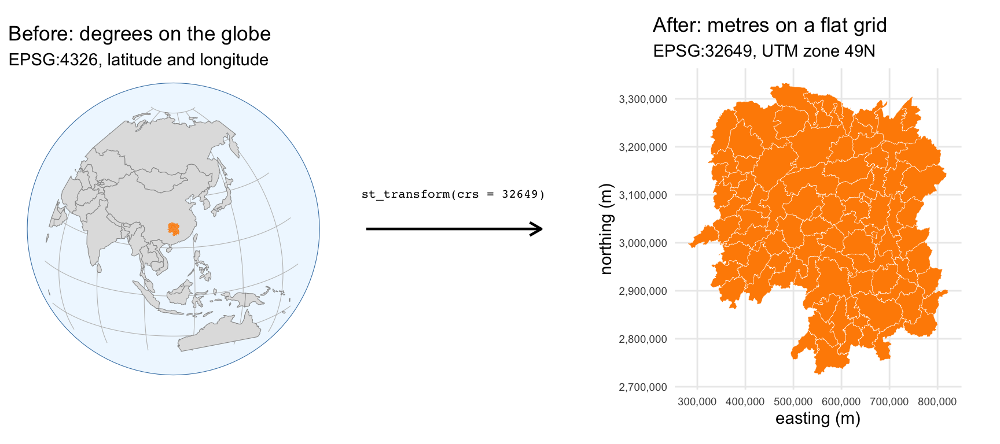
2.2.2 Development indicators
hunan2012 <- read_csv("data/aspatial/Hunan_2012.csv", show_col_types = FALSE)
dim(hunan2012)[1] 88 29
NoteHow the code works
The block uses one function:
read_csv(file, show_col_types = should_show_types()) # readrread_csv()reads a comma-separated file into a tibble and guesses the type of each column from its values.show_col_types = FALSEsuppresses the message that lists those guesses.dim()returns the number of rows and columns.
The two files are read by different functions, which return different kinds of object:
read_csv() |
st_read() |
|
|---|---|---|
| Package | readr, part of the tidyverse |
sf |
| Reads | a table of values, here a CSV file | a spatial file, here a shapefile |
| Returns | a tibble (tbl_df), a kind of data frame |
an sf data frame: a data frame with a geometry column |
| Geometry and CRS | none | one polygon per row, with its CRS |
| On this page | Hunan_2012: 88 rows, 29 columns of indicators |
Hunan: 88 county polygons with 7 attribute fields |
| Role on this page | supplies GDPPC, the variable every statistic tests | supplies the county boundaries, from which the maps are drawn and the neighbours found |
left_join() in the next section attaches the CSV’s columns to the county polygons, so that GDPPC and the geometry are in one sf object.
2.3 Joining the two
hunan <- left_join(hunan, hunan2012, by = "County") |>
select(1:4, 7, 15)
names(hunan)[1] "NAME_2" "ID_3" "NAME_3" "ENGTYPE_3" "County" "GDPPC"
[7] "geometry"
NoteHow the code works
The block uses two functions:
left_join(x, y, by = NULL) # dplyr
select(.data, ...) # dplyrleft_join()keeps every row ofx, herehunanwith its geometry, and adds the columns ofyfrom the matching row.bynames the column to match on. With the default,NULL, it matches on every column name the two tables share and prints a message naming them. Chapter 9 relies on that default. This chunk namesby = "County", as in Exercise 4, which fixes the match to one column.select()keeps the columns listed in..., given as names or as positions.1:4, 7, 15are positions in the joined table. On an sf object the geometry column is kept without being listed.
The joined table has 36 columns. Columns 8 to 35 come from the CSV. The columns that select() keeps are shaded:
| 1 | 2 | 3 | 4 | 5 | 6 | 7 | 8 | … | 15 | … | 36 |
|---|---|---|---|---|---|---|---|---|---|---|---|
| NAME_2 | ID_3 | NAME_3 | ENGTYPE_3 | Shape_Leng | Shape_Area | County | City | … | GDPPC | … | geometry |
Selection by position depends on this column order. The printed names confirm that the six attributes kept are the ones intended.
The same columns can be selected by name, which does not depend on the column order and states what is kept:
hunan <- left_join(hunan, hunan2012, by = "County") |>
select(NAME_2, ID_3, NAME_3, ENGTYPE_3, County, GDPPC)Both versions return the same object. The page keeps the chapter’s positions so that its code matches chapter 9.
3 Part 1: Global measures of spatial autocorrelation
This part follows r4gdsa Chapter 9. Each statistic in it is a single value for the whole province, tested against the null hypothesis of spatial randomness.
3.1 Mapping GDPPC
equal <- tm_shape(hunan) +
tm_polygons(fill = "GDPPC",
fill.scale = tm_scale_intervals(style = "equal", n = 5,
values = "brewer.blues"),
fill.legend = tm_legend(title = "GDPPC",
position = tm_pos_out("right", "center"))) +
tm_borders(col_alpha = 0.5) +
tm_title("Equal interval classification")
quantile <- tm_shape(hunan) +
tm_polygons(fill = "GDPPC",
fill.scale = tm_scale_intervals(style = "quantile", n = 5,
values = "brewer.blues"),
fill.legend = tm_legend(title = "GDPPC",
position = tm_pos_out("right", "center"))) +
tm_borders(col_alpha = 0.5) +
tm_title("Quantile classification")
tmap_arrange(equal, quantile, asp = 1, ncol = 2)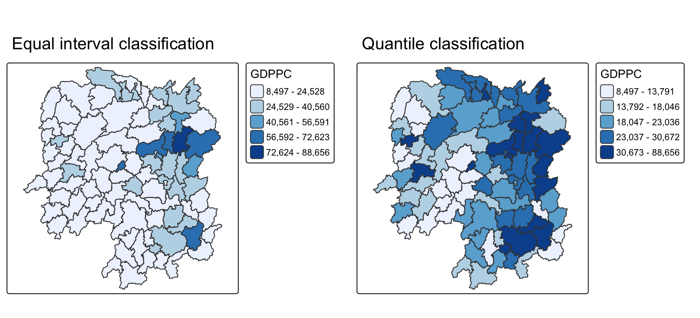
NoteHow the code works
The block uses eight functions:
tm_shape(shp) # tmap
tm_polygons(fill, fill.scale, fill.legend) # tmap
tm_scale_intervals(n = 5, style = "pretty", values = NA) # tmap
tm_legend(title, position) # tmap
tm_pos_out(cell.h, cell.v) # tmap
tm_borders(col, col_alpha) # tmap
tm_title(text) # tmap
tmap_arrange(..., ncol = NA, asp = 0) # tmaptm_shape()names the sf object that the layers after it draw. Each+adds a layer or a setting.tm_polygons()draws the polygons. Each visual property in tmap v4 has three arguments:fillnames the variable that sets the colour,fill.scalesets how its values map to colours, andfill.legendsets the legend.tm_scale_intervals()divides a numeric variable intonclasses by the method instyle, and colours them from the palette invalues, here the ColorBrewer Blues palette. The default style is"pretty". Onlystylediffers between the two maps.tm_legend()sets the legend title and position.tm_pos_out("right", "center")places the legend outside the map frame, to the right and centred vertically, so that it covers no county.tm_borders()adds a layer that draws only the county boundaries, here at half opacity (col_alpha = 0.5).tm_polygons()already draws the boundaries, in dark grey at full opacity, so on these maps the extra layer changes little. Chapter 9 includes the same layer.tm_title()adds the title above the map.tmap_arrange()places stored maps side by side inncolcolumns.asp = 1gives each map an aspect ratio of 1, where the default,0, fits each map to its cell.
In the chapters, the two maps illustrate the effect of the classification method on the apparent pattern. With a right-skewed variable such as GDPPC, equal-interval breaks place most of the province in the lowest class and Changsha alone in the highest. Quantile breaks assign an equal number of counties to each class and show higher GDPPC in the north east than in the west.
Chapter 10 asks two questions of these maps:
- Do they reveal outliers or clusters? Changsha stands out as an outlier, the only county in the highest equal-interval class. The quantile map suggests a cluster of higher GDPPC in the north east and of lower GDPPC in the west.
- Do they indicate hot spots or cold spots? They suggest where these may lie, around Changsha and in the west, but a choropleth cannot show whether the pattern is significant. Section 3.3 tests it for the province, and sections 4.1 and 4.2 for each county.
summary(hunan$GDPPC) Min. 1st Qu. Median Mean 3rd Qu. Max.
8497 14566 20433 24405 27224 88656 3.2 Contiguity weights
Chapter 9 builds the neighbour list with Queen contiguity and divides each county’s weights by its neighbour count. Exercise 4 built the same matrix.
wm_q <- poly2nb(hunan, queen = TRUE)
summary(wm_q)Neighbour list object:
Number of regions: 88
Number of nonzero links: 448
Percentage nonzero weights: 5.785124
Average number of links: 5.090909
Link number distribution:
1 2 3 4 5 6 7 8 9 11
2 2 12 16 24 14 11 4 2 1
2 least connected regions:
30 65 with 1 link
1 most connected region:
85 with 11 linksrswm_q <- nb2listw(wm_q, style = "W", zero.policy = TRUE)
rswm_qCharacteristics of weights list object:
Neighbour list object:
Number of regions: 88
Number of nonzero links: 448
Percentage nonzero weights: 5.785124
Average number of links: 5.090909
Weights style: W
Weights constants summary:
n nn S0 S1 S2
W 88 7744 88 37.86334 365.9147
NoteHow the code works
The two blocks above use two functions:
poly2nb(pl, queen = TRUE) # spdep
nb2listw(neighbours, style = "W", zero.policy = NULL) # spdeppoly2nb()builds a neighbour list from polygons: for each county, the row numbers of the counties whose boundaries touch it. Withqueen = TRUE, the default, one shared boundary point is enough, andqueen = FALSErequires a shared edge. The call states the default, as chapter 9 does.nb2listw()turns the neighbour list into a weights object, which the spdep tests take as theirlistwargument.style = "W", the default, row-standardises the weights.zero.policy = TRUEallows a county with no neighbours. With the default,NULL, spdep uses its global option, under which a county with no neighbours stops the function with an error.
The figure follows one county, Anxiang in row 1, through the two functions. poly2nb() records the row numbers of the five counties that touch it, and nb2listw() gives each of them a weight of 1/5.
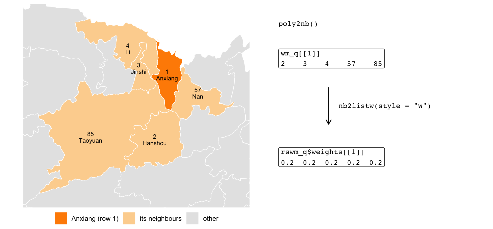
Row standardisation makes each county’s weights sum to 1. A lagged value is thus a weighted average of the neighbouring values, on the same scale as the variable itself. Every global statistic below is computed on this weights object.
3.3 Moran’s I
3.3.1 The test
moran.test(hunan$GDPPC,
listw = rswm_q,
zero.policy = TRUE,
na.action = na.omit)
Moran I test under randomisation
data: hunan$GDPPC
weights: rswm_q
Moran I statistic standard deviate = 4.7351, p-value = 1.095e-06
alternative hypothesis: greater
sample estimates:
Moran I statistic Expectation Variance
0.300749970 -0.011494253 0.004348351
NoteHow the code works
The block uses one function:
moran.test(x, listw, randomisation = TRUE, zero.policy = attr(listw, "zero.policy"),
alternative = "greater", na.action = na.fail) # spdepmoran.test()computes Moran’s I forxwith the weights inlistw, and tests it against its expectation under spatial randomness. It reports I, its expectation and variance, and the z-score, labelled “standard deviate”, with its p-value.randomisation = TRUE, the default, sets the null model for the variance of I. Section 5.5 explains the choice.alternativesets the direction of the test. The three options are:alternativeTests whether I is Pattern it looks for "greater", the defaultabove its expectation clustering: neighbouring values tend to be similar "less"below its expectation dispersion: neighbouring values tend to be dissimilar "two.sided"different from its expectation in either direction either pattern This page keeps the default, because the question is whether GDPPC clusters.
moran.mc()in section 3.3.2 has the same default. The local statistics of Part 2 default to"two.sided".zero.policy = TRUEpermits counties with no neighbours. Hunan has no such county, so the argument has no effect here.na.action = na.omitdrops counties with missing values, where the default,na.fail, stops with an error. GDPPC has no missing values, so this argument also has no effect.
The figure places the z-score of this test on the standard normal curve. The shaded bands mark how far a z-score lies from zero, and the red line marks the result for GDPPC.
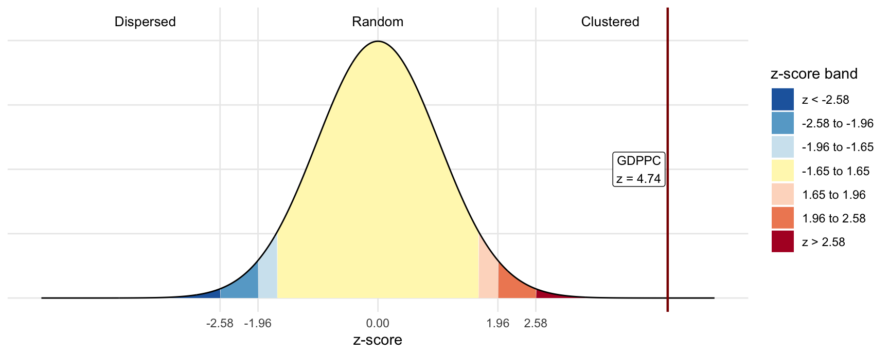
Chapter 9 asks what statistical conclusion the output supports:
- Moran’s I: 0.301, against an expectation of −0.0115 under spatial randomness. The expectation, −1/(n−1), is slightly negative, because a county is not its own neighbour.
- Test: z = 4.74 and p = 1.1 × 10⁻⁶, so the null hypothesis of spatial randomness is rejected.
Slide 10 of the Lesson 5 lecture gives the reading of I, shown below on a scale from negative to positive with the value for GDPPC marked.
Code
i_obs <- round(unname(moran.test(hunan$GDPPC, listw = rswm_q)$estimate[1]), 3)
ggplot() +
annotate("rect", xmin = -1, xmax = -0.1, ymin = -0.25, ymax = 0.25, fill = "#67a9cf", alpha = 0.5) +
annotate("rect", xmin = -0.1, xmax = 0.1, ymin = -0.25, ymax = 0.25, fill = "#fff7bc") +
annotate("rect", xmin = 0.1, xmax = 1, ymin = -0.25, ymax = 0.25, fill = "#ef8a62", alpha = 0.5) +
annotate("segment", x = -1.05, xend = 1.08, y = 0, yend = 0, linewidth = 0.8,
arrow = arrow(ends = "both", length = unit(0.3, "cm"))) +
annotate("text", x = c(-0.55, 0, 0.55), y = 0.55, fontface = "bold", size = 4,
label = c("Negative: dispersed", "About zero: random", "Positive: clustered")) +
annotate("text", x = c(-0.55, 0, 0.55), y = -0.5, size = 3.2,
label = c("neighbours tend to be dissimilar", "no spatial pattern",
"neighbours tend to be similar")) +
annotate("point", x = i_obs, y = 0, size = 3.5, colour = "darkred") +
annotate("label", x = i_obs, y = 0.25, vjust = -0.2, size = 3.2,
label = paste0("GDPPC, I = ", i_obs)) +
annotate("text", x = c(-1, 0, 1), y = -0.18, label = c("-1", "0", "+1"), size = 3) +
coord_cartesian(xlim = c(-1.15, 1.15), ylim = c(-0.7, 0.75)) +
theme_void()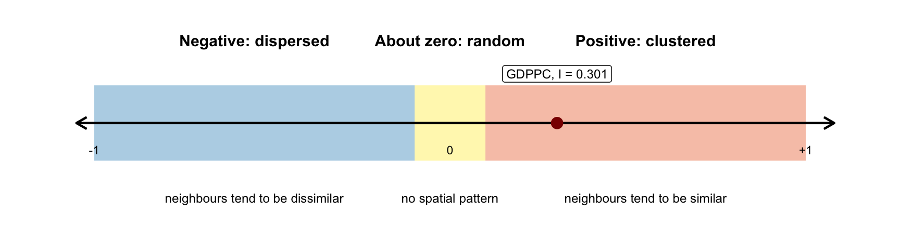
The width of the middle band is schematic: whether a value of I is close enough to zero is decided by the test above. GDPPC is in the positive case: counties have values more similar to those of their neighbours than a random allocation of the same 88 values would produce. The test confirms that the higher GDPPC in the north east and lower GDPPC in the west, shown by the quantile map in section 3.1, is not an artefact of the visual interpretation of a choropleth.
3.3.2 The permutation test
Moran’s I has an analytical null distribution. It assumes either that the values are drawn from a normal distribution or that they are a random permutation of the observed values. For a right-skewed variable such as GDPPC, a test that does not depend on this assumption is preferable. A Monte Carlo test constructs the null distribution empirically: the 88 values are randomly reassigned to the 88 counties many times, and I is computed for each permutation.
set.seed(1234)
bperm <- moran.mc(hunan$GDPPC,
listw = rswm_q,
nsim = 999,
zero.policy = TRUE,
na.action = na.omit)
bperm
Monte-Carlo simulation of Moran I
data: hunan$GDPPC
weights: rswm_q
number of simulations + 1: 1000
statistic = 0.30075, observed rank = 1000, p-value = 0.001
alternative hypothesis: greater
NoteHow the code works
The block uses two functions:
set.seed(seed) # base R
moran.mc(x, listw, nsim, zero.policy = attr(listw, "zero.policy"),
alternative = "greater", na.action = na.fail) # spdepset.seed()fixes the starting point of R’s random number generator. The permutations are then the same on every render, and the reported p-value does not change between renders.moran.mc()runs the Monte Carlo test: it reassigns the values ofxto the counties at randomnsimtimes and computes I for each assignment.nsimhas no default. Withnsim = 999the observed I is ranked among 1,000 values, so the smallest attainable pseudo p-value is 1/1000.alternative = "greater", the default, tests for positive spatial autocorrelation.na.action = na.omitdrops counties with missing values, where the default,na.fail, stops with an error. GDPPC has no missing values, so the argument has no effect here.zero.policydefaults to the setting stored in the weights object, andrswm_qwas built withzero.policy = TRUE, so setting it again changes nothing.bperm$resholds the 999 simulated values followed by the observed I as its 1,000th element. The summaries and the histogram below usebperm$res[1:999], which excludes the observed value. Chapter 9 plots the whole ofbperm$res.
Chapter 9 asks what statistical conclusion the output supports:
- Rank: the observed I ranks 1000th of 1000 values, above all 999 permuted values.
- Pseudo p-value: 0.001, the smallest attainable with 999 simulations.
- Conclusion: the null hypothesis of spatial randomness is rejected, as in section 3.3.1.
3.3.3 The simulated distribution
mean(bperm$res[1:999])[1] -0.01504572var(bperm$res[1:999])[1] 0.004371574summary(bperm$res[1:999]) Min. 1st Qu. Median Mean 3rd Qu. Max.
-0.18339 -0.06168 -0.02125 -0.01505 0.02611 0.27593 ggplot(tibble(I = bperm$res[1:999]), aes(x = I)) +
geom_histogram(bins = 20, fill = "grey70", colour = "black") +
geom_vline(xintercept = -1 / (nrow(hunan) - 1), colour = "red") +
labs(x = "Simulated Moran's I", y = "Count",
title = "Monte Carlo null distribution, 999 permutations") +
theme_minimal()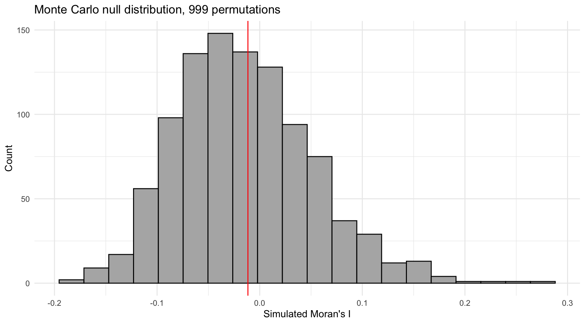
NoteHow the code works
The block uses these functions:
tibble(...) # tibble
ggplot(data, aes(x)) # ggplot2
geom_histogram(bins, fill, colour) # ggplot2
geom_vline(xintercept, colour) # ggplot2
labs(x, y, title) # ggplot2
theme_minimal() # ggplot2tibble(I = bperm$res[1:999])builds a data frame with one column, holding the 999 simulated values of Moran’s I. The nameIis chosen here and is only a column name.ggplot()starts a plot from that data frame.aes()sets the aesthetic mapping: which column controls which visual property of the plot, such as position, colour or size.aes(x = I)places the values of columnIalong the horizontal axis. The observed I is not among them, and the text below the plot compares it with the simulated values.- Each
+adds a layer or a setting.geom_histogram()sorts the values intobins = 20intervals and draws a bar for each, withfillsetting the colour of the bars andcolourtheir outline. geom_vline()draws a vertical line atxintercept, here the expectation −1/(n−1).labs()sets the axis labels and the title, andtheme_minimal()removes the grey background.
Chapter 9 asks what statistical observation the histogram supports:
- Centre: the simulated values are distributed approximately symmetrically around the expectation −1/(n−1), marked by the red line. Chapter 9 draws the line at zero, which at n = 88 is 0.0115 away and indistinguishable on this axis.
- Observed value: 0.301, beyond the largest of the 999 simulated values, 0.276.
Chapter 9 also sets a challenge: to plot the values with ggplot2 instead of base graphics. The histogram above is drawn with ggplot2.
3.4 Geary’s C
3.4.1 The test
Moran’s I is based on the deviation of each county from the provincial mean. Geary’s C is based on the squared differences between each county and its neighbours, so it is more sensitive to local differences between neighbouring values.
geary.test(hunan$GDPPC, listw = rswm_q)
Geary C test under randomisation
data: hunan$GDPPC
weights: rswm_q
Geary C statistic standard deviate = 3.6108, p-value = 0.0001526
alternative hypothesis: Expectation greater than statistic
sample estimates:
Geary C statistic Expectation Variance
0.6907223 1.0000000 0.0073364
NoteHow the code works
The block uses one function:
geary.test(x, listw, randomisation = TRUE, zero.policy = attr(listw, "zero.policy"),
alternative = "greater") # spdepgeary.test()computes Geary’s C forxwith the weights inlistw, and tests it against its expectation of 1 under spatial randomness. The call passes onlyxandlistw, so every other argument keeps its default.- The “standard deviate” in the output is (1 − C) divided by the standard deviation of C, so it is positive when C is below 1.
alternative = "greater"therefore tests for clustering, as it does for Moran’s I, although clustering makes C smaller than its expectation. randomisation = TRUE, the default, sets the null model for the variance of C, as formoran.test()in section 3.3.1.
The two maps compare the statistics on one county, Anxiang, and its five neighbours from section 3.2. Moran’s I compares every county with the provincial mean. Geary’s C compares Anxiang directly with each neighbour and squares the difference, so the mean plays no part.
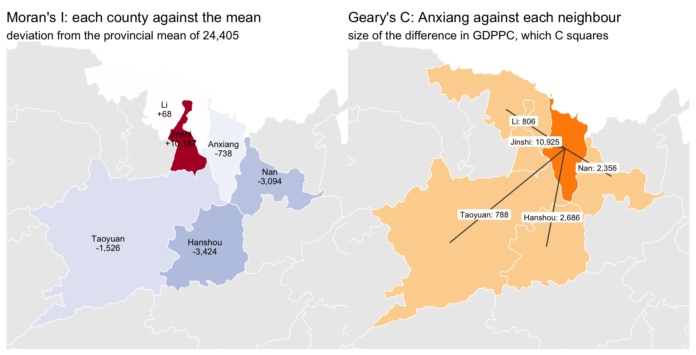
Chapter 9 asks what statistical conclusion the output supports. Geary’s C for GDPPC is 0.691, against an expectation of exactly 1 (z = 3.61, p = 1.5 × 10⁻⁴), so the null hypothesis of spatial randomness is rejected.
Its scale is inverted relative to Moran’s I. Slide 12 of the Lesson 5 lecture states that C approaches 0 and I approaches 1 when similar values cluster:
| Pattern | Moran’s I | Geary’s C |
|---|---|---|
| clustered: neighbouring values similar | positive, towards 1 | below 1, towards 0 |
| random | about its expectation, −0.0115 | about 1 |
| dispersed: neighbouring values dissimilar | negative | above 1 |
| GDPPC | 0.301 | 0.691 |
Both values are on the clustered side, so like Moran’s I, C indicates significant positive spatial autocorrelation.
3.4.2 The permutation test
set.seed(1234)
bperm <- geary.mc(hunan$GDPPC,
listw = rswm_q,
nsim = 999)
bperm
Monte-Carlo simulation of Geary C
data: hunan$GDPPC
weights: rswm_q
number of simulations + 1: 1000
statistic = 0.69072, observed rank = 1, p-value = 0.001
alternative hypothesis: greater
NoteHow the code works
The block uses one function:
geary.mc(x, listw, nsim, zero.policy = attr(listw, "zero.policy"),
alternative = "greater") # spdepgeary.mc()runs the Monte Carlo test for Geary’s C in the same way asmoran.mc()in section 3.3.2: it reassigns the values ofxto the counties at randomnsimtimes and computes C for each assignment.set.seed(1234)again makes the permutations the same on every render.- With
alternative = "greater", the pseudo p-value counts the permuted values of C that are at or below the observed one, since a small C indicates clustering. - The result is stored in
bperm, which replaces the Moran’s I result of section 3.3.2. As before,bperm$resholds the 999 simulated values followed by the observed C as its 1,000th element.
Chapter 9 asks what statistical conclusion the output supports:
- Rank: the observed C, 0.69072, ranks first of the 1000 values, below all 999 permuted values.
- Pseudo p-value: 0.001, the smallest attainable with 999 simulations.
- Conclusion: the null hypothesis of spatial randomness is rejected, as in section 3.4.1.
3.4.3 The simulated distribution
mean(bperm$res[1:999])[1] 1.004402var(bperm$res[1:999])[1] 0.007436493summary(bperm$res[1:999]) Min. 1st Qu. Median Mean 3rd Qu. Max.
0.7142 0.9502 1.0052 1.0044 1.0595 1.2722 ggplot(tibble(C = bperm$res[1:999]), aes(x = C)) +
geom_histogram(bins = 20, fill = "grey70", colour = "black") +
geom_vline(xintercept = 1, colour = "red") +
labs(x = "Simulated Geary's C", y = "Count",
title = "Monte Carlo null distribution, 999 permutations") +
theme_minimal()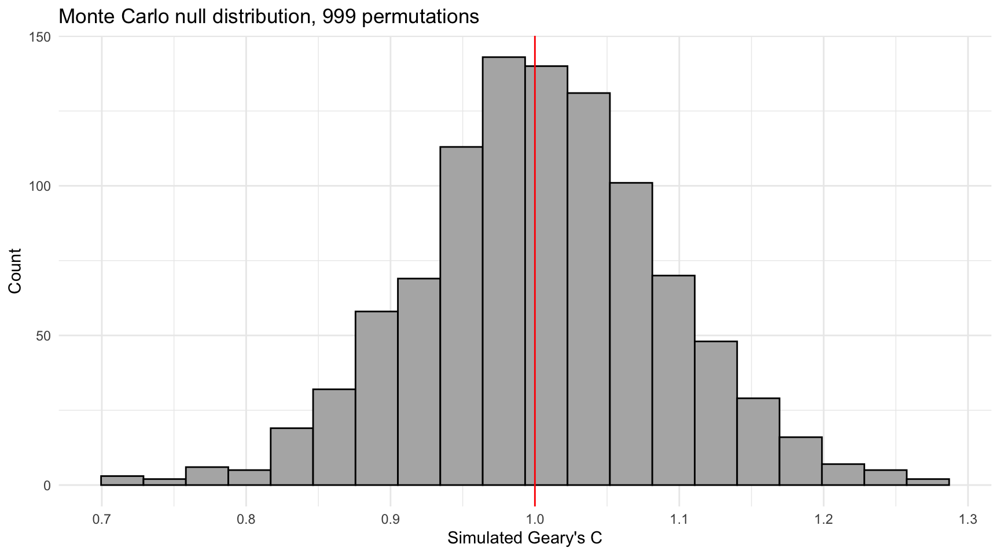
Chapter 9 asks what statistical observation the histogram supports:
- Centre: the reference line at 1 is the expectation under spatial randomness, and the simulated mean is approximately equal to it.
- Observed value: 0.691 lies beyond the left tail, which for Geary’s C is the side that indicates clustering.
3.5 Spatial correlogram
Both statistics so far were computed on first-order neighbours only. A spatial correlogram computes the statistic at successive lag orders, where lag 2 comprises the neighbours of the neighbours, and shows the range of lags over which spatial autocorrelation persists.
MI_corr <- sp.correlogram(wm_q,
hunan$GDPPC,
order = 6,
method = "I",
style = "W")
plot(MI_corr)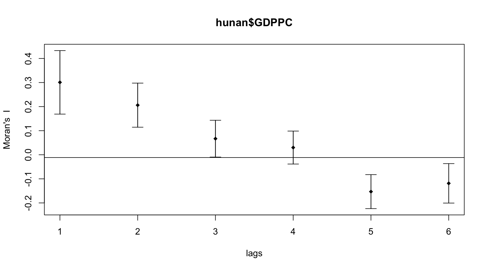
NoteHow the code works
The block uses one function:
sp.correlogram(neighbours, var, order = 1, method = "corr", style = "W") # spdepsp.correlogram()computes a spatial autocorrelation statistic at each lag from 1 toorder. It takes the neighbour listwm_qbecause it builds the higher-order neighbours itself, so it needs no weights object. The lag-2 neighbours of a county are the neighbours of its neighbours, excluding the county itself and its lag-1 neighbours, and so on up toorder = 6.methodselects the statistic. The default,"corr", is a correlation coefficient, somethod = "I"is needed for Moran’s I. The Geary correlogram below usesmethod = "C".style = "W"row-standardises the weights at each lag.plot()draws the value at each lag with a bar two standard deviations either side, and a horizontal line at the expected value under spatial randomness.
The map shows the lags that sp.correlogram() builds, counted from one county, Changsha. Each county is coloured by the number of steps across shared boundaries that separate it from Changsha. At lag 1 Changsha is compared with its immediate neighbours, and at lags 5 and 6 with counties in the west and south of the province.
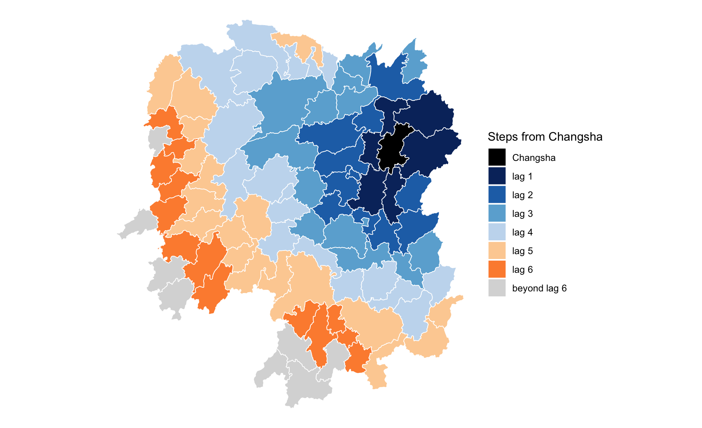
print(MI_corr)Spatial correlogram for hunan$GDPPC
method: Moran's I
estimate expectation variance standard deviate Pr(I) two sided
1 (88) 0.3007500 -0.0114943 0.0043484 4.7351 2.189e-06 ***
2 (88) 0.2060084 -0.0114943 0.0020962 4.7505 2.029e-06 ***
3 (88) 0.0668273 -0.0114943 0.0014602 2.0496 0.040400 *
4 (88) 0.0299470 -0.0114943 0.0011717 1.2107 0.226015
5 (88) -0.1530471 -0.0114943 0.0012440 -4.0134 5.984e-05 ***
6 (88) -0.1187070 -0.0114943 0.0016791 -2.6164 0.008886 **
---
Signif. codes: 0 '***' 0.001 '**' 0.01 '*' 0.05 '.' 0.1 ' ' 1Chapter 9 asks what statistical observation the correlogram supports:
- Decline: Moran’s I falls from 0.30 at lag 1 to 0.03 at lag 4.
- Sign change: it turns negative between lags 4 and 5, and is significantly negative at lags 5 and 6.
- Reason: negative values at the higher lags reflect the geometry of the province as well as the distribution of GDPPC. At lag 5 the neighbour sets of a county extend across the province. Counties in the north east are then compared with counties in the west, and the values at the two ends differ.
Lag 4 is the first order at which the null hypothesis of no spatial autocorrelation is not rejected. Lag 3 is significant at p = 0.04, a marginal result that warrants adjustment, since six tests are reported in one table. A correction raises the evidence a test must reach, so that a lag counts as significant only on stronger evidence than 0.05. Holm’s correction ranks the six p-values and applies the strictest threshold to the smallest, then a looser threshold to each in turn. print.spcor() defaults to p.adj.method = "none", so the first table reported unadjusted p-values.
print(MI_corr, p.adj.method = "holm")Spatial correlogram for hunan$GDPPC
method: Moran's I
estimate expectation variance standard deviate Pr(I) two sided
1 (88) 0.3007500 -0.0114943 0.0043484 4.7351 1.217e-05 ***
2 (88) 0.2060084 -0.0114943 0.0020962 4.7505 1.217e-05 ***
3 (88) 0.0668273 -0.0114943 0.0014602 2.0496 0.0808001 .
4 (88) 0.0299470 -0.0114943 0.0011717 1.2107 0.2260150
5 (88) -0.1530471 -0.0114943 0.0012440 -4.0134 0.0002394 ***
6 (88) -0.1187070 -0.0114943 0.0016791 -2.6164 0.0266570 *
---
Signif. codes: 0 '***' 0.001 '**' 0.01 '*' 0.05 '.' 0.1 ' ' 1Under Holm’s correction lag 3 is no longer significant (p = 0.081), and the p-value at lag 6 increases to 0.027. At lags 1, 2 and 5 the p-values all increase and all remain below 0.001. Only lag 4 is unchanged, since it already had the largest p-value in the table. Section 5.3 addresses the same multiple-comparisons problem on a much larger scale, for the 88 local statistics.
GC_corr <- sp.correlogram(wm_q,
hunan$GDPPC,
order = 6,
method = "C",
style = "W")
plot(GC_corr)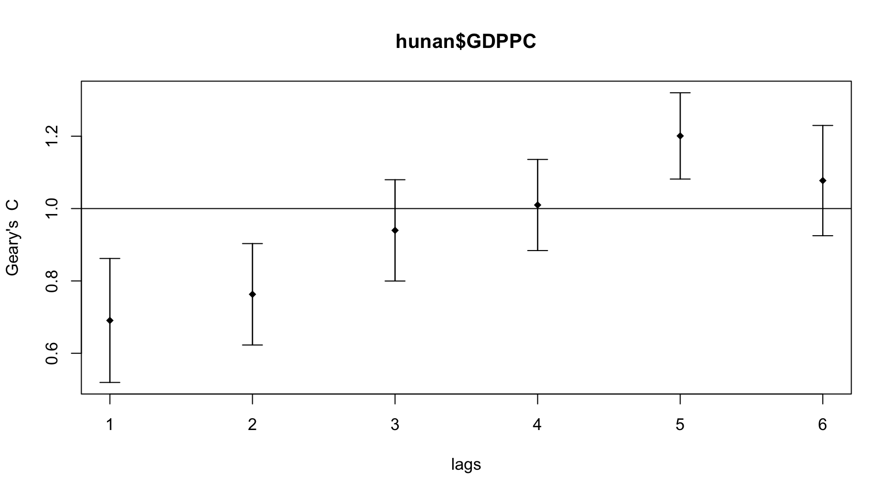
print(GC_corr)Spatial correlogram for hunan$GDPPC
method: Geary's C
estimate expectation variance standard deviate Pr(I) two sided
1 (88) 0.6907223 1.0000000 0.0073364 -3.6108 0.0003052 ***
2 (88) 0.7630197 1.0000000 0.0049126 -3.3811 0.0007220 ***
3 (88) 0.9397299 1.0000000 0.0049005 -0.8610 0.3892612
4 (88) 1.0098462 1.0000000 0.0039631 0.1564 0.8757128
5 (88) 1.2008204 1.0000000 0.0035568 3.3673 0.0007592 ***
6 (88) 1.0773386 1.0000000 0.0058042 1.0151 0.3100407
---
Signif. codes: 0 '***' 0.001 '**' 0.01 '*' 0.05 '.' 0.1 ' ' 1Geary’s C increases from 0.69 towards 1 and then exceeds it. Its correlogram has the shape of the Moran correlogram with the vertical axis reversed. Their p-values, however, do not follow the same pattern.
| Lag | Moran p | Geary p |
|---|---|---|
| 1 | 2.2e-06 | 3.1e-04 |
| 2 | 2.0e-06 | 7.2e-04 |
| 3 | 0.040 | 0.389 |
| 4 | 0.226 | 0.876 |
| 5 | 6.0e-05 | 7.6e-04 |
| 6 | 0.0089 | 0.310 |
Moran’s I and Geary’s C agree at lags 1, 2, 4 and 5. At lags 3 and 6 Moran’s I is significant and Geary’s C is not. This difference follows from the structure of the two statistics. Moran’s I is based on deviations from the provincial mean, and a gradual trend across the province contributes to it. Geary’s C is based on differences between neighbouring values, and a weak trend that leaves adjacent pairs similar contributes little to it. Section 5.6 finds the opposite for the local forms: local Geary’s c identifies more significant counties than local Moran’s I, 21 against 16.
4 Part 2: Local measures of spatial autocorrelation
This part follows r4gdsa Chapter 10. Each statistic in it is computed for every county, and the results are mapped. Chapter 10 repeats the data import and the GDPPC maps of chapter 9, which are in sections 2 and 3.1 of this page and are not repeated here.
4.1 Local indicators of spatial association
A global statistic summarises the whole province in a single value. It shows neither where the clustering is concentrated nor which individual counties differ from their neighbours. A local indicator of spatial association (LISA) is computed for each county and answers both questions. Anselin (1995) defines a LISA as any statistic that satisfies two requirements:
- Local clustering. It “gives an indication of the extent of significant spatial clustering of similar values around that observation”.
- Link to the global statistic. “The sum of LISAs for all observations is proportional to a global indicator of spatial association”.
Local Moran’s I satisfies both. Under the second requirement, its 88 local values sum to a quantity proportional to the global Moran’s I of section 3.3, as slide 22 of the Lesson 5 lecture shows.
4.1.1 Weights the sfdep way
sfdep stores the neighbour list and the weights as columns of the sf object, each holding a list. Each row holds a county’s geometry, its attributes, its neighbours and its weights.
wm_q <- hunan |>
mutate(nb = st_contiguity(geometry),
wt = st_weights(nb, style = "W"),
.before = 1)
summary(wm_q$nb)Neighbour list object:
Number of regions: 88
Number of nonzero links: 448
Percentage nonzero weights: 5.785124
Average number of links: 5.090909
Link number distribution:
1 2 3 4 5 6 7 8 9 11
2 2 12 16 24 14 11 4 2 1
2 least connected regions:
30 65 with 1 link
1 most connected region:
85 with 11 links
NoteHow the code works
The block uses three functions:
mutate(.data, name = value, ..., .before = NULL) # dplyr
st_contiguity(geometry, queen = TRUE) # sfdep
st_weights(nb, style = "W", allow_zero = NULL) # sfdepmutate()adds columns to a data frame. Eachname = valuepair creates one column, herenbandwt. A later pair can use a column created by an earlier one, sowtis computed from thenbcreated on the line above..beforesets where the new columns go, and takes a column position or a column name..before = 1places them before the column now in position 1, so they become the first two columns. The default,NULL, adds them after the existing columns. Placing them first makes them visible at the start of each printed row.st_contiguity()finds, for each polygon, the polygons that share a boundary with it, and returns a neighbour list: for each county, a vector of the row numbers of its neighbours. Withqueen = TRUE, the default, a single shared boundary point is enough.queen = FALSErequires a shared edge. The function callspoly2nb()from section 3.2, so it returns the same list.st_weights()gives each neighbour a weight. Withstyle = "W", the default, each of a county’s weights is 1 divided by its number of neighbours, so its weights sum to 1. The function callsnb2listw()from section 3.2 and keeps only the weights.allow_zeroconcerns counties without neighbours, and Hunan has none.
hunan before the block, first three counties:
| NAME_2 | … | County | GDPPC | geometry |
|---|---|---|---|---|
| Changde | … | Anxiang | 23667 | polygon |
| Changde | … | Hanshou | 20981 | polygon |
| Changde | … | Jinshi | 34592 | polygon |
| … | … | … | … | … |
wm_q after the block, with the two new columns shaded:
| nb | wt | NAME_2 | … | County | GDPPC | geometry |
|---|---|---|---|---|---|---|
| 2, 3, 4, 57, 85 | 0.2, 0.2, 0.2, 0.2, 0.2 | Changde | … | Anxiang | 23667 | polygon |
| 1, 57, 58, 78, 85 | 0.2, 0.2, 0.2, 0.2, 0.2 | Changde | … | Hanshou | 20981 | polygon |
| 1, 4, 5, 85 | 0.25, 0.25, 0.25, 0.25 | Changde | … | Jinshi | 34592 | polygon |
| … | … | … | … | … | … | … |
Each cell of nb and wt holds a vector, one element per neighbour. Anxiang has five neighbours, so each receives a weight of 1/5 = 0.2, and Jinshi has four, each weighted 0.25.
The figure follows Anxiang through the two functions, as the figure in section 3.2 does for poly2nb() and nb2listw().
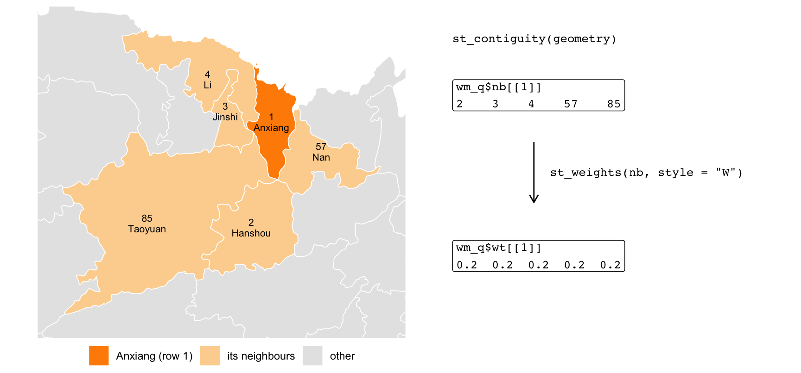
The neighbour summary matches poly2nb() exactly: 448 links across 88 counties, average 5.09.
4.1.2 Local Moran’s I
set.seed(1234)
lisa <- wm_q |>
mutate(local_moran = local_moran(GDPPC, nb, wt, nsim = 999),
.before = 1) |>
unnest(local_moran)
glimpse(lisa)Rows: 88
Columns: 21
$ ii <dbl> -1.468468e-03, 2.587817e-02, -1.198765e-02, 1.022468e-03,…
$ eii <dbl> 5.194905e-05, 3.386676e-03, -2.050725e-02, 1.677027e-06, …
$ var_ii <dbl> 5.170509e-04, 1.050470e-02, 1.160620e-01, 5.577212e-06, 1…
$ z_ii <dbl> -0.06686456, 0.21944543, 0.02500774, 0.43224316, 0.425129…
$ p_ii <dbl> 9.466895e-01, 8.263031e-01, 9.800488e-01, 6.655647e-01, 6…
$ p_ii_sim <dbl> 0.798, 0.970, 0.774, 0.580, 0.606, 0.748, 0.048, 0.112, 0…
$ p_folded_sim <dbl> 0.399, 0.485, 0.387, 0.290, 0.303, 0.374, 0.024, 0.056, 0…
$ skewness <dbl> -1.0728711, -0.9674141, 1.1031694, 1.0937498, 0.8918350, …
$ kurtosis <dbl> 1.2305223, 1.0166190, 1.1714030, 1.2281892, 0.6858284, 0.…
$ mean <fct> Low-High, Low-Low, High-Low, High-High, High-High, High-L…
$ median <fct> High-High, High-High, High-High, High-High, High-High, Hi…
$ pysal <fct> Low-High, Low-Low, High-Low, High-High, High-High, High-L…
$ nb <nb> <2, 3, 4, 57, 85>, <1, 57, 58, 78, 85>, <1, 4, 5, 85>, <1,…
$ wt <list> <0.2, 0.2, 0.2, 0.2, 0.2>, <0.2, 0.2, 0.2, 0.2, 0.2>, <0…
$ NAME_2 <chr> "Changde", "Changde", "Changde", "Changde", "Changde", "C…
$ ID_3 <int> 21098, 21100, 21101, 21102, 21103, 21104, 21109, 21110, 2…
$ NAME_3 <chr> "Anxiang", "Hanshou", "Jinshi", "Li", "Linli", "Shimen", …
$ ENGTYPE_3 <chr> "County", "County", "County City", "County", "County", "C…
$ County <chr> "Anxiang", "Hanshou", "Jinshi", "Li", "Linli", "Shimen", …
$ GDPPC <dbl> 23667, 20981, 34592, 24473, 25554, 27137, 63118, 62202, 7…
$ geometry <POLYGON [m]> POLYGON ((602726.4 3292136,..., POLYGON ((619553.…
NoteHow the code works
The block uses three functions:
local_moran(x, nb, wt, alternative = "two.sided", nsim = 499) # sfdep
unnest(data, cols) # tidyr
glimpse(x) # dplyrlocal_moran()computes local Moran’s I for each county and tests it by conditional permutation. It returns a data frame with one row per county and one column per result.nsimdefaults to 499, and the call sets 999 to match section 3.3.2. Withalternative = "two.sided", the default, both unusually high and unusually low values of Ii count as significant.- Inside
mutate()(section 4.1.1), that data frame is stored as a single column namedlocal_moran, and.before = 1places it first. unnest()replaces the column named incolswith the columns it contains, so the 12 results become 12 columns.glimpse()prints the name, type and first values of every column, one column per line.
Before unnest(), local_moran is a single column that holds a 12-column data frame, one row per county:
| local_moran | nb | wt | … | County | geometry |
|---|---|---|---|---|---|
| ii, eii, …, pysal: 12 values | 2, 3, 4, 57, 85 | 0.2, … | … | Anxiang | polygon |
| ii, eii, …, pysal: 12 values | 1, 57, 58, 78, 85 | 0.2, … | … | Hanshou | polygon |
| … | … | … | … | … | … |
After unnest(), its 12 columns, shaded, replace it:
| ii | eii | … | p_ii_sim | … | mean | median | pysal | nb | … | geometry |
|---|---|---|---|---|---|---|---|---|---|---|
| −0.0015 | … | … | 0.798 | … | Low-High | … | … | 2, 3, 4, 57, 85 | … | polygon |
| 0.0259 | … | … | 0.970 | … | Low-Low | … | … | 1, 57, 58, 78, 85 | … | polygon |
| … | … | … | … | … | … | … | … | … | … | … |
The values shown are those of the first two counties, Anxiang and Hanshou.
Section 5.2 compares two of these p-value columns, p_ii and p_ii_sim. Each column is described below.
| Column | What it holds |
|---|---|
ii |
the local Moran’s I value for that county |
eii, var_ii, z_ii |
the permutation sample mean, variance and standardised deviate. With nsim supplied these are computed from the simulations, not from the analytical null |
p_ii |
a p-value from pnorm() on z_ii, so a normal approximation to the permutation distribution |
p_ii_sim |
a rank-based p-value from the same permutations, two-sided, on a [0, 1] scale |
p_folded_sim |
the same ranking folded onto a [0, 1] range of 0.5, so close to half of p_ii_sim |
mean, median, pysal |
three labellings of the county into one of the four scatterplot quadrants |
Under the analytical randomisation null hypothesis with row-standardised weights, every county has the same expectation, −1/(n−1) = −0.0115. The printed values of eii differ between counties, so they are sample means over the permutations.
Chapter 10 uses p_ii. This page uses p_ii_sim, for the reasons given in section 5.2.
4.1.3 The two maps
tm_shape(lisa) +
tm_polygons(fill = "ii",
fill.scale = tm_scale_intervals(style = "pretty", n = 5,
values = "brewer.rd_bu"),
fill.legend = tm_legend(title = "Local Moran's I",
position = tm_pos_out())) +
tm_borders(col_alpha = 0.5) +
tm_title("Local Moran's I of GDPPC, Queen contiguity")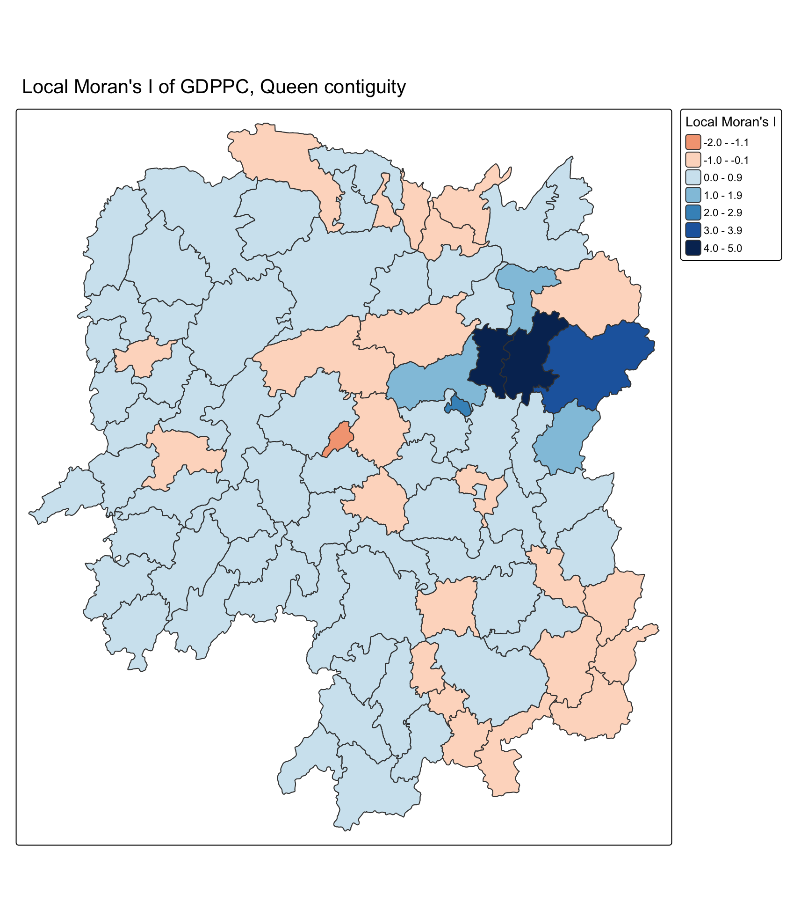
A large positive value indicates a county whose neighbours have similar values. A negative value indicates a county whose value differs from those of its neighbours. On its own, Ii does not indicate whether the association is significant. The p-value map below provides that information.
tm_shape(lisa) +
tm_polygons(fill = "p_ii_sim",
fill.scale = tm_scale_intervals(
breaks = c(0, 0.01, 0.05, 0.1, 1),
values = "-brewer.reds"),
fill.legend = tm_legend(title = "simulated p-value",
position = tm_pos_out())) +
tm_borders(col_alpha = 0.5) +
tm_title("Simulated p-values of local Moran's I, 999 permutations")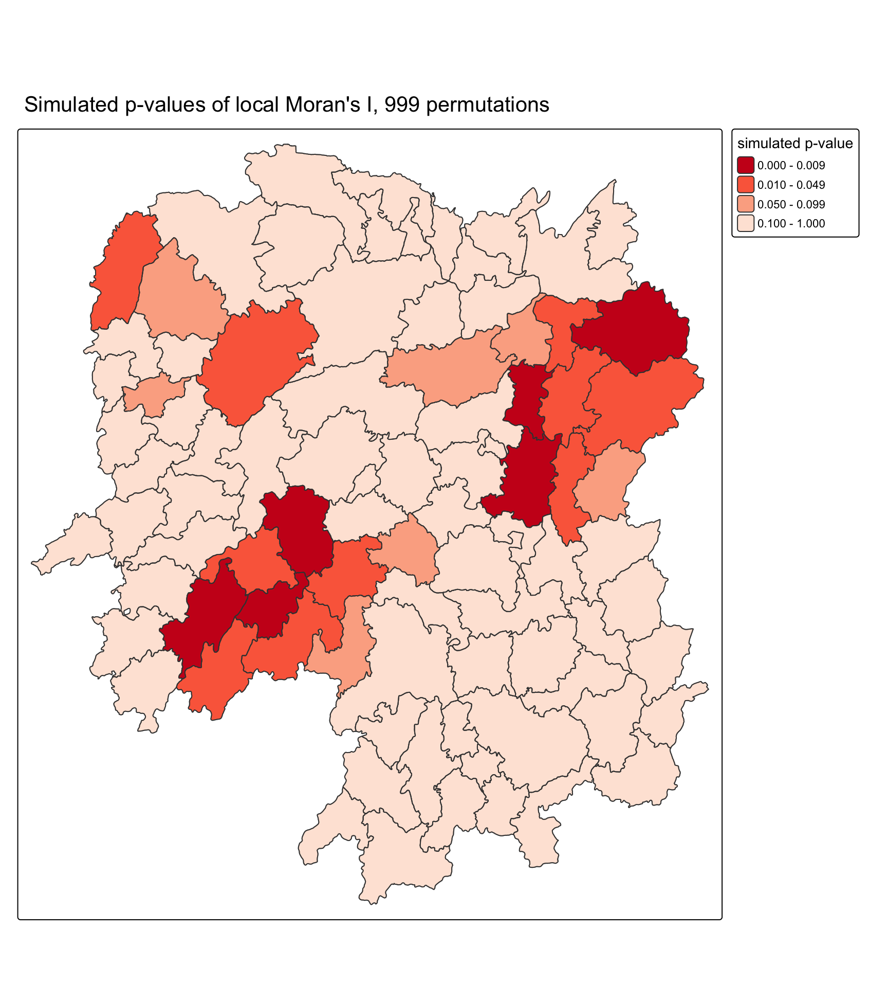
min(lisa$p_ii_sim)[1] 0.002The legend breaks differ from those of the chapter. p_ii_sim is a rank-based p-value, and its smallest attainable value is 2 / (nsim + 1), which is 0.002 at nsim = 999 and 0.02 at the chapter’s nsim = 99. The breaks are set at values attainable with nsim = 999 (section 5.2).
ii.map <- tm_shape(lisa) +
tm_polygons(fill = "ii",
fill.scale = tm_scale_intervals(style = "pretty", n = 5,
values = "brewer.rd_bu"),
fill.legend = tm_legend(title = "Local Moran's I",
position = tm_pos_out("right", "center"))) +
tm_borders(col_alpha = 0.5) +
tm_title("Local Moran's I")
p_ii.map <- tm_shape(lisa) +
tm_polygons(fill = "p_ii_sim",
fill.scale = tm_scale_intervals(
breaks = c(0, 0.01, 0.05, 0.1, 1),
values = "-brewer.reds"),
fill.legend = tm_legend(title = "p-value",
position = tm_pos_out("right", "center"))) +
tm_borders(col_alpha = 0.5) +
tm_title("Simulated p-value")
tmap_arrange(ii.map, p_ii.map, asp = 1, ncol = 2)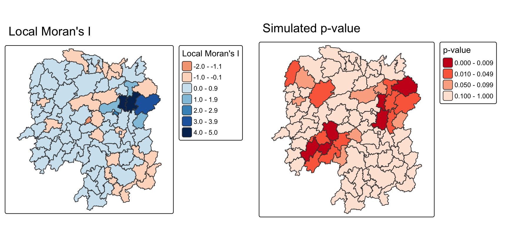
Neither map is sufficient on its own. Several counties with a large value of ii are not significant, and the set of significant counties is smaller than the set of counties with prominent values on the first map.
4.1.4 Moran scatterplot
lisa <- lisa |>
mutate(lag_GDPPC = st_lag(GDPPC, nb, wt), .before = 1)
NoteHow the code works
The block uses one function:
st_lag(x, nb, wt) # sfdepst_lag()computes the spatial lag ofx: for each county, the sum of its neighbours’ values, each multiplied by its weight. With row-standardised weights this is the average GDPPC of the neighbours, which the scatterplot below plots against the county’s own GDPPC.
The figure works through the lag for Anxiang. Each of its five neighbours has a weight of 0.2, so its lag is the average GDPPC of the five.
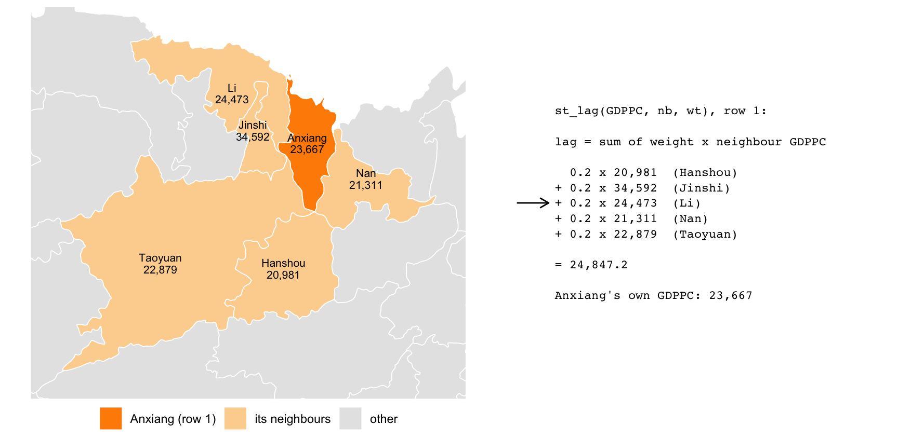
ggplot(data = lisa, aes(x = GDPPC, y = lag_GDPPC)) +
geom_point() +
geom_smooth(method = "lm", se = FALSE, colour = "red") +
labs(x = "GDPPC",
y = "Spatial lag of GDPPC",
title = "Moran scatterplot") +
theme_minimal()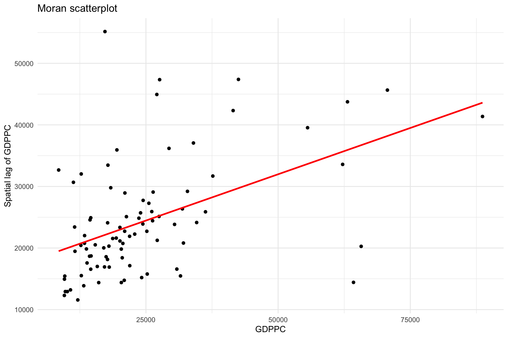
NoteHow the code works
The block uses two new functions:
geom_point(size) # ggplot2
geom_smooth(method = NULL, se = TRUE, colour) # ggplot2aes(x = GDPPC, y = lag_GDPPC)places each county’s GDPPC on the horizontal axis and its spatial lag on the vertical axis.geom_point()draws one point per county.geom_smooth()adds a fitted line.method = "lm"fits a straight line by least squares, andse = FALSEleaves out the grey confidence band that is drawn by default.
This is the scatterplot from the end of Hands-on Exercise 4, with a fitted regression line added. With row-standardised weights, Moran’s I is the least-squares slope of the spatial lag on the variable in deviations from its mean. Anselin (1996) writes I = y’Wy / y’y and treats the plot as the regression of Wy on y. The slope of the line above is therefore Moran’s I.
Anselin (1996) standardises the variable and then takes the spatial lag of the standardised values, so the vertical axis is Wz. Chapter 10 standardises the lag separately, with scale(lag_GDPPC). This page follows Anselin (1996):
lisa <- lisa |>
mutate(z_GDPPC = as.numeric(scale(GDPPC)),
z_lag_GDPPC = st_lag(z_GDPPC, nb, wt),
.before = 1)
NoteHow the code works
The block uses two functions:
scale(x, center = TRUE, scale = TRUE) # base R
as.numeric(x) # base Rscale()standardises a variable: it subtracts the mean and divides by the standard deviation, so the result has mean 0 and standard deviation 1.scale()returns an 88 × 1 matrix, andas.numeric()turns it back into a plain vector, so that it can be stored as an ordinary column.st_lag()then takes the spatial lag of the standardised values, which is Anselin’s (1996) construction.
The two constructions, the lag of the standardised variable and the separately standardised lag, give different slopes on the same 88 counties:
tibble(construction = c("Moran's I (section 3.3.1)",
"lag of GDPPC on GDPPC",
"Anselin (1996): lag of z on z",
"chapter 10: scale(lag) on z"),
slope = c(moran.test(hunan$GDPPC, rswm_q)$estimate[1],
coef(lm(lag_GDPPC ~ GDPPC, data = lisa))[2],
coef(lm(z_lag_GDPPC ~ z_GDPPC, data = lisa))[2],
coef(lm(as.numeric(scale(lag_GDPPC)) ~ z_GDPPC, data = lisa))[2])) |>
kable(digits = 4)| construction | slope |
|---|---|
| Moran’s I (section 3.3.1) | 0.3007 |
| lag of GDPPC on GDPPC | 0.3007 |
| Anselin (1996): lag of z on z | 0.3007 |
| chapter 10: scale(lag) on z | 0.4846 |
NoteHow the code works
The block uses three new functions:
lm(formula, data) # stats
coef(object) # stats
kable(x, digits) # knitrlm()fits a linear regression. The formulalag_GDPPC ~ GDPPCreads “lag_GDPPC explained by GDPPC”: the variable before~is on the vertical axis of the scatterplot and the one after it on the horizontal axis.coef()returns the fitted coefficients, the intercept first and the slope second, so[2]takes the slope.kable()prints a data frame as a formatted table, anddigits = 4rounds the numbers to four decimal places.
The chapter’s figure is titled a Moran scatterplot, but its regression line does not have Moran’s I as its slope. Under the chapter’s construction the slope is 0.485, the Pearson correlation between GDPPC and its spatial lag. The lag is an average of neighbouring values and varies less than GDPPC (standard deviations of about 9,300 and 15,000 yuan), so standardising it by its own standard deviation stretches it. Under Anselin’s (1996) construction the slope is 0.301, equal to Moran’s I. The assignment of counties to quadrants is the same under both constructions for this data.
ggplot(data = lisa, aes(x = z_GDPPC, y = z_lag_GDPPC, colour = mean)) +
geom_point(size = 2) +
geom_smooth(method = "lm", se = FALSE, colour = "black") +
geom_hline(yintercept = 0, lty = 2) +
geom_vline(xintercept = 0, lty = 2) +
scale_colour_manual(values = c("High-High" = "red",
"Low-Low" = "blue",
"Low-High" = "lightblue",
"High-Low" = "pink")) +
labs(x = "Standardised GDPPC",
y = "Standardised spatial lag of GDPPC",
colour = "Quadrant",
title = "Standardised Moran scatterplot with LISA quadrants") +
theme_minimal()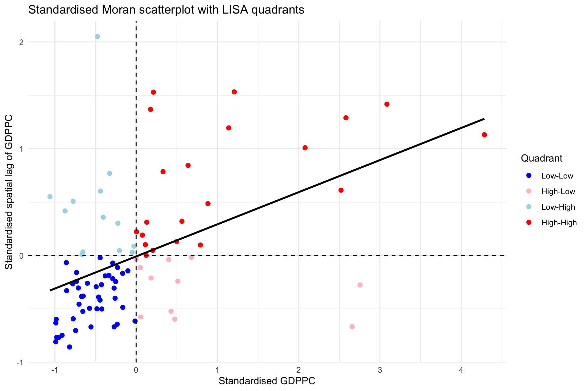
NoteHow the code works
The block uses two new functions:
geom_hline(yintercept, lty) # ggplot2
scale_colour_manual(values) # ggplot2colour = meaninsideaes()colours each point by its quadrant label in themeancolumn.geom_hline()andgeom_vline()(section 3.3.3) draw the dashed lines at zero, andlty = 2sets a dashed line.scale_colour_manual()sets the colour of each quadrant by name, matching the colours of the LISA cluster map in section 4.1.5.
The dashed lines mark zero, the mean of a standardised variable.
In the LISA cluster map, counties are classified by the four quadrants:
| Quadrant | Position | Reading |
|---|---|---|
| High-High | top right | a high value surrounded by high values, the core of a cluster |
| Low-Low | bottom left | a low value surrounded by low values |
| High-Low | bottom right | a high value surrounded by low values, a spatial outlier |
| Low-High | top left | a low value surrounded by high values, a spatial outlier |
Counties in the High-High and Low-Low quadrants have a positive local I, and counties in the High-Low and Low-High quadrants have a negative local I. The sign of Ii alone does not identify the quadrant: a positive value may indicate a High-High or a Low-Low cluster, and a negative value a High-Low or a Low-High outlier (Anselin 1995).
4.1.5 LISA cluster map
signif <- 0.05
lisa <- lisa |>
mutate(LISA_cluster = ifelse(p_ii_sim < signif, as.character(mean), "Insignificant"),
LISA_cluster = factor(LISA_cluster,
levels = c("Insignificant", "Low-Low", "Low-High",
"High-Low", "High-High")))
table(lisa$LISA_cluster)
Insignificant Low-Low Low-High High-Low High-High
72 9 1 0 6
NoteHow the code works
The block uses three functions:
ifelse(test, yes, no) # base R
as.character(x) # base R
factor(x, levels) # base Rsignif <- 0.05stores the significance threshold once. The hot and cold spot classification in section 4.2.3 uses it again.ifelse()works element by element: for each county it returnsyeswheretestis true andnowhere it is false. A significant county takes its quadrant label from themeancolumn, and the others are labelled “Insignificant”.as.character()converts the factormeanto its text labels. Without it,ifelse()would return the factor’s integer codes.- The second line of
mutate()(section 4.1.1) overwrites the column created on the first.factor()converts the labels to a factor, andlevelsfixes the order of its five classes. The paragraph after the map gives the reason.table()counts the counties in each class.
A factor stores a set of labels as numbers, together with an ordered list of the labels, called its levels. The example follows four counties through the second line of mutate():
After
ifelse(): text| County | LISA_cluster |
|---|---|
| Anxiang | Insignificant |
| Yuanling | Low-Low |
| Pingjiang | Low-High |
| Liuyang | High-High |
→
After
factor(levels = …)| County | stored as | shown as |
|---|---|---|
| Anxiang | 1 | Insignificant |
| Yuanling | 2 | Low-Low |
| Pingjiang | 3 | Low-High |
| Liuyang | 5 | High-High |
Its levels, in order
| level | label |
|---|---|
| 1 | Insignificant |
| 2 | Low-Low |
| 3 | Low-High |
| 4 | High-Low |
| 5 | High-High |
Each county is stored as the number of its level, and the label is shown in its place. The order of the levels decides the order of the classes in table(), in the legend and in the colours of the map. High-Low is level 4 although no county has it, so it keeps its place in that order.
tm_shape(lisa) +
tm_polygons(fill = "LISA_cluster",
fill.scale = tm_scale_categorical(
values = c("grey80", "blue", "lightblue", "pink", "red")),
fill.legend = tm_legend(title = "LISA cluster",
position = tm_pos_out("right", "center"))) +
tm_borders() +
tm_title("Local Moran's I clusters of GDPPC, p < 0.05")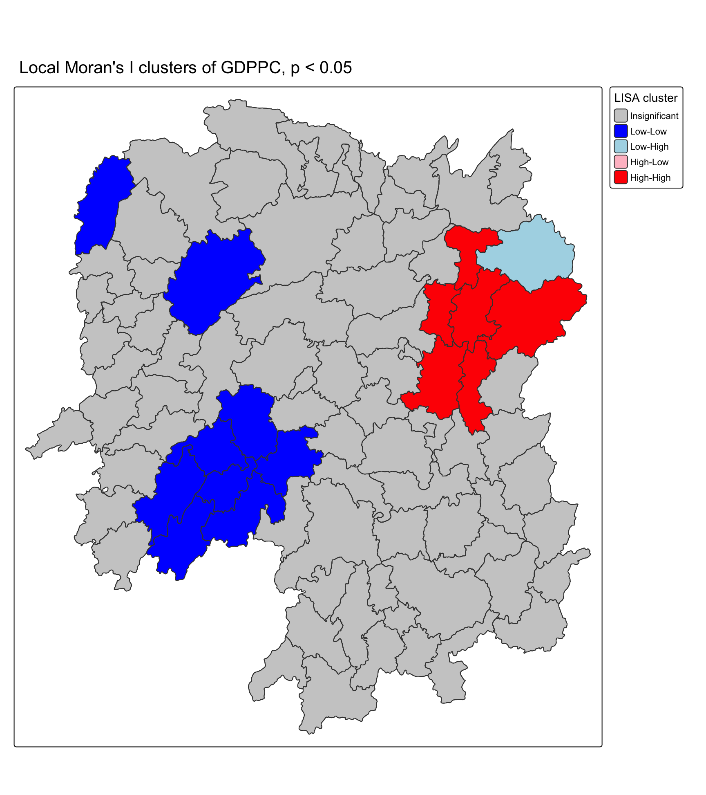
NoteHow the code works
The block uses one new function:
tm_scale_categorical(values = NA, levels.drop = FALSE) # tmaptm_scale_categorical()gives each category of a factor its own colour, in the order of the factor’s levels. The vector of colours has to be written in the same order as thelevelsargument of section 4.1.5’sfactor()call, and the levels are set explicitly for that reason.levels.drop = FALSE, the default, keeps a level in the legend even when no county has it, so the colours stay fixed.
The colours are matched to the levels by position. With the levels set in section 4.1.5, each class gets its intended colour. Without them, R sorts the classes alphabetically and drops High-Low, which no county has, so the same five colours are matched to four levels in a different order:
Levels set in section 4.1.5
| Level, in order | Counties | Colour given |
|---|---|---|
| Insignificant | 72 | grey80 |
| Low-Low | 9 | blue |
| Low-High | 1 | lightblue |
| High-Low | 0 | pink |
| High-High | 6 | red |
Levels left to R, alphabetical
| Level, in order | Counties | Colour given |
|---|---|---|
| High-High | 6 | grey80 |
| Insignificant | 72 | blue |
| Low-High | 1 | lightblue |
| Low-Low | 9 | pink |
In the second case the six High-High counties would be drawn grey and the 72 insignificant counties blue.
Chapter 10 asks what statistical observations the LISA map supports:
- Significant counties: 16 of the 88, of which six are High-High, nine Low-Low and one Low-High. The other 72 are not significant at p < 0.05.
- High-High cluster: around Changsha in the north east.
- Low-Low cluster: in the west.
- Spatial outlier: Pingjiang, the single Low-High county, which lies between the two groups and has low GDPPC with high-GDPPC neighbours.
These are uncorrected results. Section 5.3 shows how many remain significant after a correction for 88 tests.
4.2 Hot and cold spots
Local Moran’s I and Getis-Ord Gi* measure different concepts of spatial association.
| Statistic | What it measures | Significant positive value | Significant negative value |
|---|---|---|---|
| local Moran’s I | similarity between a county and its neighbours | the county is similar to its neighbours, High-High or Low-Low | a spatial outlier, High-Low or Low-High |
| Gi* | whether the sum of values in the neighbourhood is larger or smaller than expected under spatial randomness | clustering of high values, a hot spot | clustering of low values, a cold spot |
Gi* has no outlier category.
Getis and Ord (1992) state that the variable “has a natural origin and is positive”, because G is computed from the values themselves and not from their deviations from the mean, so a zero that does not represent absence of the quantity changes the statistic (section 5.4.1). GDPPC is positive in every county.
4.2.1 Distance weights
Getis and Ord (1992) define Gi* on a distance band: it measures the concentration of values within a given distance of each county. Slide 36 of the Lesson 5 lecture requires the band to be wide enough that every county has at least one neighbour.
ct <- critical_threshold(st_geometry(hunan))
ct[1] 62954.89
NoteHow the code works
The block uses two functions:
st_geometry(x) # sf
critical_threshold(geometry, k = 1) # sfdepst_geometry()extracts the geometry column of an sf object, without the attributes.critical_threshold()finds each county’s distance to its nearest neighbour (k = 1) and returns the largest of these distances. A distance band of that width gives every county at least one neighbour. The distance is in metres, becausehunanis in EPSG:32649.
st_geometry(hunan) keeps only the shaded column, the polygons:
hunan, an sf data frame| NAME_2 | ID_3 | NAME_3 | ENGTYPE_3 | County | GDPPC | geometry |
|---|---|---|---|---|---|---|
| Changde | 21098 | Anxiang | County | Anxiang | 23667 | POLYGON ((602726.4 3292136, …)) |
| Changde | 21100 | Hanshou | County | Hanshou | 20981 | POLYGON ((619553.5 3221554, …)) |
| … | … | … | … | … | … | … |
→
st_geometry(hunan), an sfc_POLYGON| geometry |
|---|
| POLYGON ((602726.4 3292136, …)) |
| POLYGON ((619553.5 3221554, …)) |
| … |
The result has no attributes, so critical_threshold() receives only the 88 shapes it measures.
The figure draws, for every county, a line to its nearest neighbour. The longest of these lines, in red, is the value critical_threshold() returns.
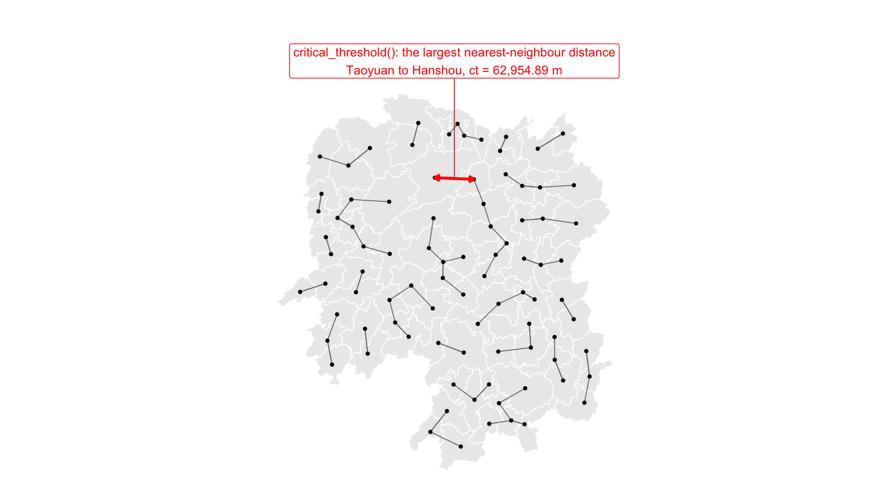
critical_threshold() returns the smallest distance at which every county has at least one neighbour, which is the rule on slide 36. Under EPSG:32649 the threshold is 62,955 m. Chapter 10 reports 60,800 m, the value of the same function under EPSG:32650. Section 5.1 examines the difference.
hunan_fdw <- hunan |>
mutate(nb = include_self(st_dist_band(geometry, upper = ct)),
wt = st_weights(nb, style = "W"),
.before = 1)
summary(lengths(hunan_fdw$nb)) Min. 1st Qu. Median Mean 3rd Qu. Max.
2.000 4.000 5.000 5.023 6.000 8.000
NoteHow the code works
The block uses three functions:
st_dist_band(geometry, lower = 0,
upper = critical_threshold(geometry)) # sfdep
include_self(nb) # sfdep
lengths(x) # base Rst_dist_band()makes a county the neighbour of every county whose distance from it lies betweenlowerandupper, here up toctmetres, sincehunanis in EPSG:32649. For polygons,sfdepmeasures the distance between points on the surface of each county, fromst_point_on_surface(), andcritical_threshold()uses the same points.upperdefaults tocritical_threshold(geometry), so passingctgives the same band and shows the value used.include_self()adds each county to its own neighbour list, which turns Gi into Gi*.st_weights()then row-standardises the weights as in section 4.1.1.lengths()returns the length of each element of a list, here the number of neighbours of each county, andsummary()gives their minimum, quartiles, mean and maximum.
The figure applies the band to Taoyuan, the county that sets ct. The circle has radius ct around Taoyuan’s point, and a county is a neighbour when its point lies inside the circle.
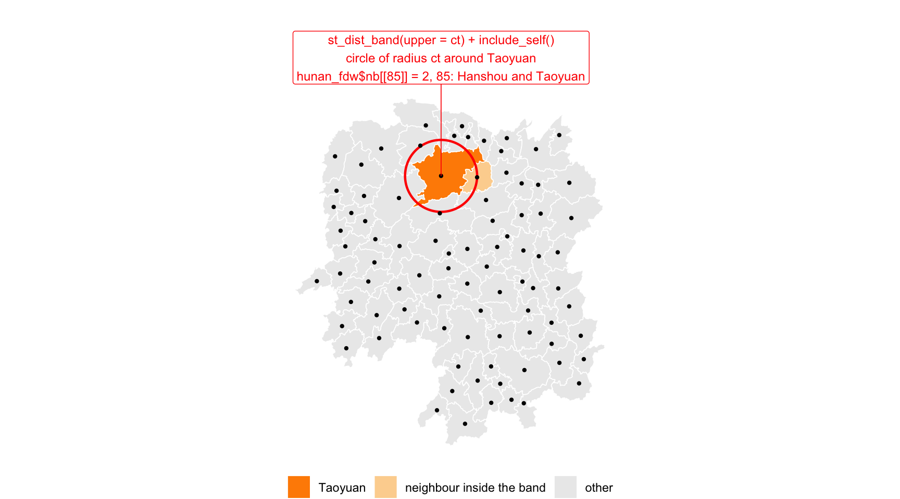
Taoyuan’s only neighbour is Hanshou, whose point lies exactly on the circle, and include_self() adds Taoyuan itself. This is the sparsest neighbourhood in the province.
include_self() distinguishes Gi* from Gi. Gi excludes the county from its own neighbourhood, and Gi* includes it. Slide 27 gives both forms, and the chapter uses Gi* throughout.
hunan_adw <- hunan |>
mutate(nb = include_self(st_knn(geometry, k = 6)),
wt = st_weights(nb, style = "W"),
.before = 1)
summary(lengths(hunan_adw$nb)) Min. 1st Qu. Median Mean 3rd Qu. Max.
7 7 7 7 7 7
NoteHow the code works
The block uses one new function:
st_knn(geometry, k = 1, symmetric = FALSE) # sfdepst_knn()makes each county’sknearest counties its neighbours, measured between points on the surface of each county, as forst_dist_band()above.k = 6gives each county six.- With
symmetric = FALSE, the default, the list need not be symmetric: county A can be among B’s six nearest without B being among A’s. include_self()andst_weights()then work as in the fixed-band block above.
An adaptive scheme fixes the number of neighbours instead of the distance. Neighbourhoods are then smaller where counties are small and larger where they are large. Slide 31 gives the case for adaptive weights. Slides 30 and 35 give the basis for k = 6: both suggest about eight neighbours per feature for a skewed variable, and slide 35 calls this a rule of thumb. k = 6 plus the county itself gives seven.
Chapter 10 creates this object but does not use it. Section 5.7 computes Gi* on both sets of weights.
4.2.2 Local Gi*
Gi* is reported as a z-score. Under a standard normal distribution, an absolute value above 1.96 corresponds to p < 0.05 in a two-sided test.
set.seed(1234)
HCSA_fdw <- hunan_fdw |>
mutate(gistar = local_gstar_perm(GDPPC, nb, wt, nsim = 999),
.before = 1) |>
unnest(gistar)
glimpse(HCSA_fdw)Rows: 88
Columns: 19
$ gi_star <dbl> 0.38306332, -0.34046184, 0.23257243, 0.36406563, 0.217412…
$ cluster <fct> Low, Low, High, High, High, High, High, High, High, Low, …
$ e_gi <dbl> 0.011238957, 0.010946123, 0.012084226, 0.011477310, 0.011…
$ var_gi <dbl> 6.543550e-06, 7.557345e-06, 7.548837e-06, 9.812248e-06, 6…
$ std_dev <dbl> 0.460762839, -0.223671403, -0.005585977, 0.360108382, 0.2…
$ p_value <dbl> 6.449688e-01, 8.230130e-01, 9.955431e-01, 7.187661e-01, 8…
$ p_sim <dbl> 0.544, 0.996, 0.810, 0.536, 0.696, 0.938, 0.052, 0.034, 0…
$ p_folded_sim <dbl> 0.272, 0.498, 0.405, 0.268, 0.348, 0.469, 0.026, 0.017, 0…
$ skewness <dbl> 1.0844673, 0.9983501, 1.1184257, 1.2759585, 0.9431153, 1.…
$ kurtosis <dbl> 1.4615396, 0.8064166, 1.4782723, 1.6020628, 0.6884654, 2.…
$ nb <nb> <1, 3, 4, 5, 57, 64>, <2, 57, 58, 78, 85>, <1, 3, 4, 5, 57…
$ wt <list> <0.1666667, 0.1666667, 0.1666667, 0.1666667, 0.1666667, …
$ NAME_2 <chr> "Changde", "Changde", "Changde", "Changde", "Changde", "C…
$ ID_3 <int> 21098, 21100, 21101, 21102, 21103, 21104, 21109, 21110, 2…
$ NAME_3 <chr> "Anxiang", "Hanshou", "Jinshi", "Li", "Linli", "Shimen", …
$ ENGTYPE_3 <chr> "County", "County", "County City", "County", "County", "C…
$ County <chr> "Anxiang", "Hanshou", "Jinshi", "Li", "Linli", "Shimen", …
$ GDPPC <dbl> 23667, 20981, 34592, 24473, 25554, 27137, 63118, 62202, 7…
$ geometry <POLYGON [m]> POLYGON ((602726.4 3292136,..., POLYGON ((619553.…
NoteHow the code works
The block uses one function:
local_gstar_perm(x, nb, wt, nsim = 499, alternative = "two.sided") # sfdeplocal_gstar_perm()computes Gi* for each county and tests it by conditional permutation. It follows the pattern oflocal_moran()in section 4.1.2: it returns a data frame of results, which is stored as the columngistarand spread into columns byunnest().nsimdefaults to 499.unnest()spreads the 10 results into 10 columns:gi_star,cluster,e_gi,var_gi,std_dev,p_value,p_sim,p_folded_sim,skewnessandkurtosis. Of these,gi_staris the statistic as a z-score, andp_simthe rank-based p-value from the 999 permutations.
gi.map <- tm_shape(HCSA_fdw) +
tm_polygons(fill = "gi_star",
fill.scale = tm_scale_intervals(style = "pretty", n = 6,
values = "-brewer.rd_bu"),
fill.legend = tm_legend(title = "Gi*",
position = tm_pos_out("right", "center"))) +
tm_borders(col_alpha = 0.5) +
tm_title("Local Gi* of GDPPC")
p.map <- tm_shape(HCSA_fdw) +
tm_polygons(fill = "p_sim",
fill.scale = tm_scale_intervals(
breaks = c(0, 0.01, 0.05, 0.1, 1),
values = "-brewer.reds"),
fill.legend = tm_legend(title = "p-value",
position = tm_pos_out("right", "center"))) +
tm_borders(col_alpha = 0.5) +
tm_title("Simulated p-value of Gi*")
tmap_arrange(gi.map, p.map, asp = 1, ncol = 2)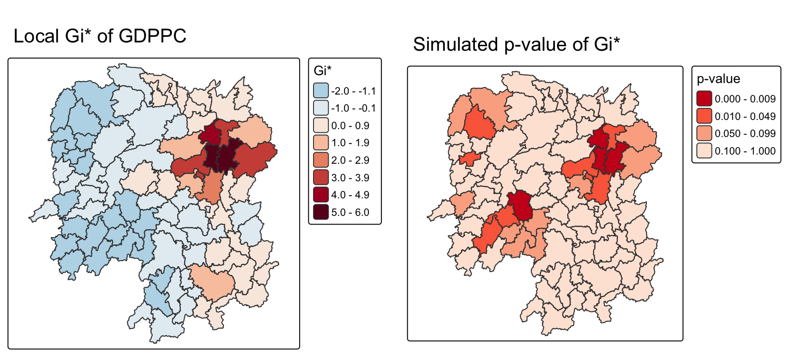
NoteHow the code works
The block sets the colours with arguments of tm_scale_intervals():
tm_scale_intervals(n = 5, style = "pretty", breaks = NULL, values = NA) # tmapvaluesnames the palette."brewer.rd_bu"is the ColorBrewer “RdBu” palette, which runs from red to blue, and"brewer.reds"runs from light to dark red.- A leading minus reverses a palette. In the Gi* map,
"-brewer.rd_bu"puts blue at the low end and red at the high end, so that negative Gi* (cold spots) is blue and positive Gi* (hot spots) is red:
"brewer.rd_bu", low to high:
"-brewer.rd_bu", low to high:
style = "pretty"withn = 6chooses about six classes with rounded break points.- In the p-value map,
breaks = c(0, 0.01, 0.05, 0.1, 1)fixes the class boundaries at the usual significance levels, and"-brewer.reds"makes the smallest p-values the darkest red.
4.2.3 Hot and cold spot map
HCSA_fdw <- HCSA_fdw |>
mutate(HCSA_cluster = case_when(
p_sim >= signif ~ "Insignificant",
gi_star > 0 ~ "Hot spot",
TRUE ~ "Cold spot"),
HCSA_cluster = factor(HCSA_cluster,
levels = c("Insignificant", "Hot spot", "Cold spot")))
table(HCSA_fdw$HCSA_cluster)
Insignificant Hot spot Cold spot
76 7 5
NoteHow the code works
The block uses two functions:
case_when(condition ~ value, ...) # dplyr
factor(x, levels) # base Rcase_when()tests its conditions in order and, for each county, returns the value of the first condition that holds. A county withp_sim >= signifis labelled “Insignificant” whatever its Gi*, andTRUE ~ "Cold spot"labels every county not yet labelled, which is significant with a Gi* of zero or below. With three outcomes,ifelse()(section 4.1.5) would need one call inside another.- As in section 4.1.5,
factor()fixes the order of the classes, and with it the order of the colours in the map.
tm_shape(HCSA_fdw) +
tm_polygons(fill = "HCSA_cluster",
fill.scale = tm_scale_categorical(
values = c("grey80", "red", "blue")),
fill.legend = tm_legend(title = "Gi* cluster",
position = tm_pos_out("right", "center"))) +
tm_borders() +
tm_title("Hot and cold spots of GDPPC, fixed distance band, p < 0.05")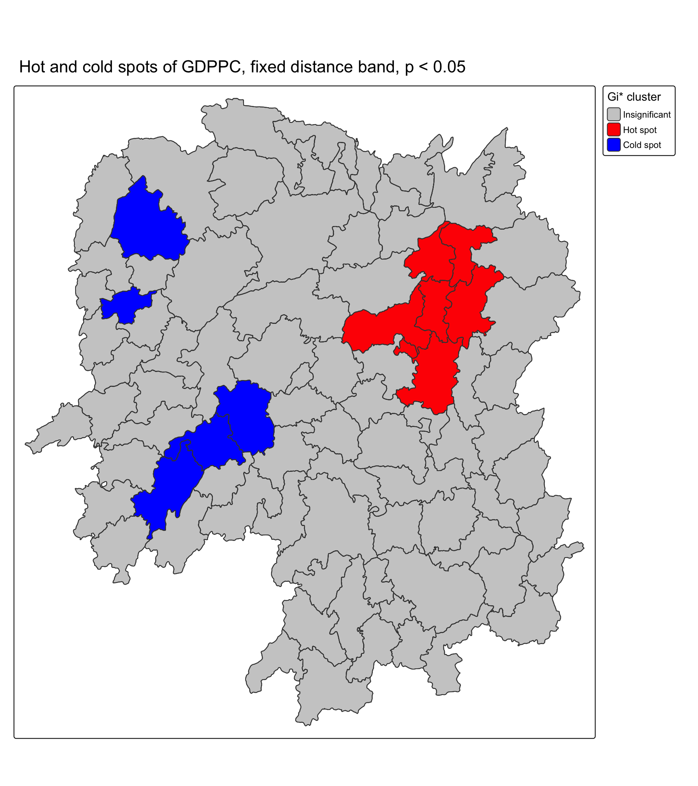
Chapter 10 asks what statistical observations the hot and cold spot map supports:
- Significant counties: 12 of the 88, seven hot spots and five cold spots. The other 76 are not significant at p < 0.05.
- Hot spot: Changsha and the surrounding counties.
- Cold spot: in the west.
- Comparison with the LISA map of section 4.1.5: both place the division between high and low GDPPC in the same location, and differ in how far the clusters on each side of it extend. In the west, where the counties are fewer and larger, the fixed distance band on which Gi* is computed reaches further than contiguity.
5 Part 3: Review and extension
Parts 1 and 2 reproduced chapters 9 and 10 of r4gdsa. This part examines their method, and adds the parts of the Lesson 5 lecture and readings that the two chapters do not cover.
| Section | What I do | Source |
|---|---|---|
| Checking chapter 10’s method | ||
| 5.1 | Measure distances in the correct UTM zone | UTM zone boundaries |
| 5.2 | Choose the local p-value and the number of simulations | Ord and Getis (1995) |
| 5.3 | Correct the LISA map for 88 simultaneous tests | Ord and Getis (1995), Anselin (1995), Getis (2010) |
| Adding what the chapters leave out | ||
| 5.4 | Test whether high or low values drive the clustering | slides 16 and 17 |
| 5.4.1 | Test how G responds to adding a constant to GDPPC | Getis and Ord (1992) |
| 5.5 | Compare the null models for Moran’s I | Moran (1950), Geary (1954) |
| 5.6 | Compare local Geary’s c with local Moran’s I | slide 26 |
| 5.7 | Use the adaptive weights that chapter 10 builds but does not use | slides 30 and 35 |
| 5.7.1 | Vary k to find the hot and cold spots that do not depend on it |
Mack and Kam (2018) |
| 5.8 | Test Anselin’s claim that Gi, Gi* and local Moran’s I share one inference | Anselin (1995) |
5.1 Projected CRS: zone 49N versus zone 50N
Section 2.2.1 projected the Hunan layer to EPSG:32649, and section 4.2.1 computed from it a fixed bandwidth of 62,955 m, against the 60,800 m reported in chapter 10. Both values are computed by the same function on the same polygons. The difference arises from the coordinate system in which the distances are measured.
In the Universal Transverse Mercator (UTM) system:
- the world is divided into sixty zones, each six degrees of longitude wide;
- each zone is projected onto its own plane with its own central meridian;
- coordinates in a zone are metres on that plane, and a distance computed from them is measured on that plane and not on the ellipsoid;
- distortion is smallest near the central meridian and increases away from it.
The map below shows the zones over East Asia, with Hunan in orange.
Code
s2_was <- sf_use_s2(FALSE) # crop in plain longitude and latitude
world <- spData::world |> st_crop(xmin = 80, xmax = 150, ymin = 0, ymax = 60)
sf_use_s2(s2_was)
bounds <- seq(84, 144, by = 6) # zone boundaries, 6 degrees apart
zone_lines <- st_sfc(lapply(bounds, function(x) st_linestring(cbind(x, seq(0, 56, 0.5)))),
crs = 4326)
zone_labels <- st_sf(label = paste0(45:54, "N"),
geometry = st_sfc(lapply(bounds[-length(bounds)] + 3,
function(x) st_point(c(x, 4))), crs = 4326))
ggplot() +
geom_sf(data = world, fill = "grey90", colour = "grey60", linewidth = 0.2) +
geom_sf(data = st_transform(hunan, 4326),
fill = "darkorange", colour = NA) +
geom_sf(data = zone_lines, colour = "grey20", linewidth = 0.4) +
geom_sf_text(data = zone_labels, aes(label = label), size = 3.2) +
coord_sf(crs = "+proj=lcc +lat_1=20 +lat_2=45 +lon_0=114 +datum=WGS84",
xlim = c(-2600000, 2600000), ylim = c(-500000, 4300000)) +
labs(x = NULL, y = NULL) +
theme_minimal()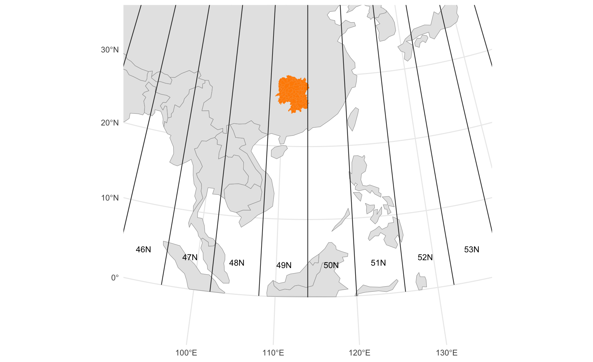
Hence the zone assigned to a province determines the meridian relative to which its distances are measured. Chapter 10 projects the data to EPSG:32650 (zone 50N), and chapter 9 does not project them. Neither chapter discusses the choice.
This section addresses three questions:
- Which zone contains Hunan?
- How much does the fixed bandwidth differ between the two zones?
- Does the hot and cold spot map of section 4.2.3 change as a result?
hunan_raw <- st_read(dsn = "data/geospatial", layer = "Hunan", quiet = TRUE)The map below marks the UTM zones on the unprojected layer. Dashed lines are zone boundaries, and solid lines are the central meridians.
Code
lines_df <- tibble(lon = c(108, 114, 120, 111, 117),
type = c(rep("zone boundary", 3), rep("central meridian", 2)))
ggplot() +
geom_sf(data = hunan_raw, fill = "grey85", colour = "white") +
geom_vline(data = lines_df, aes(xintercept = lon, linetype = type)) +
annotate("label", x = c(111, 117), y = 30.55, label = c("zone 49N", "zone 50N"),
label.size = 0, fill = "white") +
scale_linetype_manual(values = c("central meridian" = "solid", "zone boundary" = "dashed")) +
coord_sf(xlim = c(107.5, 120.5), ylim = c(24.5, 30.8), expand = FALSE) +
labs(x = NULL, y = NULL, linetype = NULL) +
theme_minimal()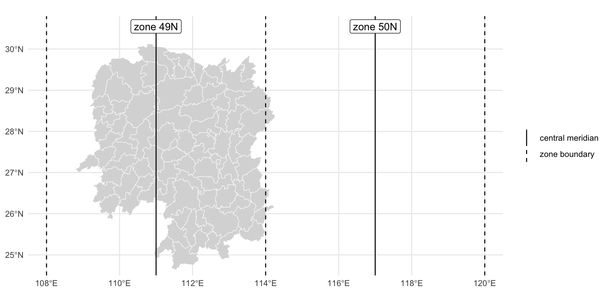
Hunan extends from 108.78°E to 114.25°E. UTM zone 49N covers 108°E to 114°E, and zone 50N covers 114°E to 120°E. All of the province except a narrow strip east of 114°E lies in zone 49N. Its centre, at 111.5°E, is 2.5° west of the western boundary of zone 50N and 5.5° from the central meridian of that zone.
Projection to zone 50N thus measures distances on the grid of the wrong zone. These distances are the input to the fixed distance band.
ct49 <- critical_threshold(st_geometry(st_transform(hunan_raw, 32649)))
ct50 <- critical_threshold(st_geometry(st_transform(hunan_raw, 32650)))
tibble(zone = c("49N (EPSG:32649)", "50N (EPSG:32650)"),
critical_threshold_m = c(ct49, ct50)) |>
mutate(difference_pct = 100 * (critical_threshold_m - ct49) / ct49) |>
kable(digits = 2)| zone | critical_threshold_m | difference_pct |
|---|---|---|
| 49N (EPSG:32649) | 62954.89 | 0.00 |
| 50N (EPSG:32650) | 60799.91 | -3.42 |
In zone 50N the computation reproduces the chapter’s value of 60,799.91 m exactly, confirming its source. In the correct zone the bandwidth is 62,954.89 m, 3.4% wider.
Scale distortion does not explain the difference. Switching from zone 49N to zone 50N stretches distances across Hunan by only about 0.3%, because the scale factor of UTM increases with distance from the central meridian. That would make the zone 50N threshold slightly larger, but it is 3.4% smaller.
Distances are least distorted along a zone’s central meridian and are stretched more the further a county lies from it. The zone map above shows Hunan around the central meridian of zone 49N, and 3 to 8 degrees west of the central meridian of zone 50N.
The sketch below shows why. A UTM zone is drawn by wrapping a sheet around the globe so that it touches along the central meridian, and projecting each point outward onto the sheet. Where the sheet touches the globe, a distance is copied almost exactly. Away from that line the globe curves away from the sheet, and the same distance lands on a longer piece of the sheet. The sketch is simplified and its angles are exaggerated. For Hunan in zone 50N the stretch is about 0.3%.
Code
deg <- pi / 180
sketch_parts <- function(zone, offset) {
arc <- seq(offset - 12, offset + 12, by = 1) * deg # Hunan, 24 degrees wide
ends <- tan(range(arc)) # where Hunan lands on the sheet
list(globe = tibble(zone, a = seq(-90, 90, 1) * deg, x = sin(a), y = cos(a)),
hunan = tibble(zone, x = sin(arc), y = cos(arc)),
image = tibble(zone, x = ends, y = 1),
rays = tibble(zone, x = 0, y = 0, xend = ends, yend = 1))
}
zones <- c("Zone 49N: sheet touches inside Hunan", "Zone 50N: sheet touches east of Hunan")
parts <- map2(zones, c(0, -40), sketch_parts) |> transpose() |> map(bind_rows)
ggplot() +
annotate("segment", x = -1.6, xend = 1.6, y = 1, yend = 1, colour = "grey40") +
geom_path(data = parts$globe, aes(x, y), colour = "grey60") +
geom_segment(data = parts$rays, aes(x, y, xend = xend, yend = yend),
linetype = "dotted", colour = "grey50") +
geom_path(data = parts$hunan, aes(x, y), colour = "darkorange", linewidth = 2) +
geom_line(data = parts$image, aes(x, y), colour = "darkorange", linewidth = 2) +
annotate("point", x = 0, y = 1, size = 2.5) +
facet_wrap(~ zone) +
coord_equal(xlim = c(-1.6, 1.6), ylim = c(-0.05, 1.1)) +
theme_void() +
theme(strip.text = element_text(size = 11, margin = margin(b = 6)))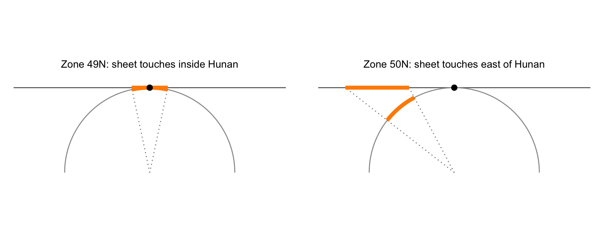
In each panel the grey arc is the globe, the straight line is the sheet, and the black dot is where the sheet touches, on the central meridian. The dotted lines project Hunan outward from the centre of the globe. The orange arc is Hunan on the globe, and the orange bar is Hunan on the map. In zone 49N the bar is almost as long as the arc. In zone 50N it is longer.
The point inside each county moves. critical_threshold() returns the largest distance from a county to its nearest neighbour, measured between one point inside each county. In both zones that distance is between Taoyuan and Hanshou. sfdep computes the points with st_point_on_surface() after projection, and the point chosen depends on the projection: Taoyuan’s point in zone 50N lies about 3.3 km from its point in zone 49N. Moving the zone 49N points into zone 50N, without choosing them again, gives 63,160 m, 0.3% longer, as the scale factor predicts.
Whether the difference affects the results is a separate question from which zone is correct. Below, the effect on the hot and cold spot classification is tested.
h50 <- st_transform(hunan_raw, 32650) |>
left_join(hunan2012, by = "County") |>
select(1:4, 7, 15)
fdw50 <- h50 |>
mutate(nb = include_self(st_dist_band(geometry, upper = ct50)),
wt = st_weights(nb, style = "W"), .before = 1)
set.seed(1234)
g50 <- local_gstar_perm(fdw50$GDPPC, fdw50$nb, fdw50$wt, nsim = 999)
cls <- function(gi, p) factor(ifelse(p >= 0.05, "Insignificant",
ifelse(gi > 0, "Hot spot", "Cold spot")),
levels = c("Insignificant", "Hot spot", "Cold spot"))
table(zone_49N = HCSA_fdw$HCSA_cluster,
zone_50N = cls(g50$gi_star, g50$p_sim)) zone_50N
zone_49N Insignificant Hot spot Cold spot
Insignificant 74 1 1
Hot spot 2 5 0
Cold spot 0 0 5
NoteHow the code works
The block repeats earlier steps in zone 50N and defines one function:
cls <- function(gi, p) ... # defined here- The first three steps repeat, for zone 50N, the join of section 2.3, the fixed band of section 4.2.1 and the Gi* test of section 4.2.2.
function(gi, p)defines a new function,cls(), with two inputs: the Gi* values and their p-values. It applies the classification of section 4.2.3 in one line, so that the two zones are classified in exactly the same way.table()then cross-tabulates the two classifications, county by county.
The off-diagonal cells of the table count the counties that the two zones classify differently. Four of the 88 counties change class: two hot spots in zone 49N are insignificant in zone 50N, and two insignificant counties in zone 49N become a hot spot and a cold spot. The remaining 84 are classified the same in both zones.
5.2 Local p-values: normal approximation versus rank
local_moran() returns two p-values for each county, and they can disagree:
p_iistandardises the observed statistic by the mean and standard deviation of its permutation distribution and passes the result throughpnorm(). It is a normal approximation to that distribution.p_ii_simis based on the rank of the observed statistic among the permuted values, and requires no assumption about the shape of the distribution.
Chapter 10 classifies counties on p_ii. This page uses p_ii_sim, from the LISA map of section 4.1.3 onwards, and this section explains the choice.
Both columns come from the same simulation, so the chapter’s p_ii also uses the permutations it runs. Chapter 10 calls local_moran(GDPPC, nb, wt, nsim = 99), which runs 99 permutations for each of the 88 counties, 8,712 in all. Each permutation is conditional: the value of the county is held fixed and the remaining 87 values are randomly permuted over the other 87 counties.
Two questions decide between the two columns, and this section examines them in turn:
- Is the permutation distribution close enough to normal for
p_iito be valid? The simulations of Ord and Getis (1995) show when it is not, andlocal_moran()reports the skewness of each county’s permutation distribution as a direct check. - Can 99 permutations produce a p-value small enough to pass a corrected threshold? With 88 counties, the Bonferroni threshold of section 5.3 is 0.05/88. The worked example in Anselin (1995) applies the same kind of correction with 9,999 permutations (section 5.3.2).
The section ends with p_folded_sim, a third p-value column, and the reason this page does not use it.
Ord and Getis (1995) is the assigned reading on the conditions under which the normal approximation fails. They examine the question by simulation, with five thousand random permutations on a 10 by 10 lattice under four distributions.
Their simulations concern Gi* and Gi and not the local Moran. In their section 4 they show that the global Moran’s I is a weighted average of the local G statistics, and this page takes that relation as the basis for applying their results to the local Moran.
They report the following patterns:
- When the underlying distribution is normal, so is that of the test statistics (an exact result);
- when the underlying distribution is markedly skew, the distribution of the test statistics is non-normal, but approaches normality as the distance is increased.
- the statistics for edge cells approach normality more slowly because they have fewer neighbors; the convergence for corner cells is still slower.
Patterns (ii) and (iii) both apply to these data. GDPPC is right skewed, as in pattern (ii), and the counties with the fewest neighbours correspond to the edge cells of pattern (iii). local_moran() reports the skewness and kurtosis of the permutation distribution of each county, so the departure from normality can be measured directly.
tibble(measure = c("skewness", "kurtosis"),
min = c(min(lisa$skewness), min(lisa$kurtosis)),
median = c(median(lisa$skewness), median(lisa$kurtosis)),
max = c(max(lisa$skewness), max(lisa$kurtosis))) |>
kable(digits = 3)| measure | min | median | max |
|---|---|---|---|
| skewness | -2.043 | -0.797 | 1.896 |
| kurtosis | -0.066 | 0.855 | 4.385 |
A normal distribution has skewness 0 and excess kurtosis 0. Here the permutation distributions have neither property, and pnorm() treats them as normal.
How many counties are significant at p < 0.05 under each p-value? The table has four rows:
p_ii,nsim = 99: the chapter’s choice, a normal approximation.p_ii_sim,nsim = 99: the same simulation as the chapter, so only the p-value column changes.p_ii_sim,nsim = 999: this page’s choice, used for the LISA map of section 4.1.3.p_folded_sim,nsim = 999: a third column thatlocal_moran()returns, examined at the end of this section.
set.seed(1234)
lm99 <- local_moran(hunan$GDPPC, wm_q$nb, wm_q$wt, nsim = 99)
tibble(p_value = c("p_ii (normal approximation)", "p_ii_sim, nsim = 99",
"p_ii_sim, nsim = 999", "p_folded_sim, nsim = 999"),
significant_at_0.05 = c(sum(lm99$p_ii < 0.05),
sum(lm99$p_ii_sim < 0.05),
sum(lisa$p_ii_sim < 0.05),
sum(lisa$p_folded_sim < 0.05))) |>
kable()| p_value | significant_at_0.05 |
|---|---|
| p_ii (normal approximation) | 13 |
| p_ii_sim, nsim = 99 | 16 |
| p_ii_sim, nsim = 999 | 16 |
| p_folded_sim, nsim = 999 | 23 |
Both the number of significant counties and their identity depend on whether p_ii or p_ii_sim is used.
table(chapter_p_ii = ifelse(lm99$p_ii < 0.05, as.character(lm99$mean), "Insignificant"),
simulated = as.character(lisa$LISA_cluster)) simulated
chapter_p_ii High-High Insignificant Low-High Low-Low
High-High 6 2 0 0
Insignificant 0 69 0 6
Low-High 0 1 1 0
Low-Low 0 0 0 3Of the four groups, Low-Low changes most. With the normal-approximation p-value, three counties in the west are classified as Low-Low, and with the simulated p-value, nine. The six additional counties, found by the rank-based p-value from the simulation that the chapter itself runs, have low GDPPC and neighbours with low GDPPC, the pattern the LISA map is intended to identify.
Chapter 10’s nsim = 99 also limits the smallest attainable p-value, the second condition listed above. A conditional permutation p-value is (number of simulations at least as extreme + 1) / (nsim + 1). Its smallest possible value is 1 / (nsim + 1).
For the two-sided p_ii_sim the smallest value is twice that. local_moran() also returns p_folded_sim, the same ranking folded onto the range [0, 0.5], which is not doubled.
tibble(nsim = c(99, 999, 9999),
floor_p_ii_sim = 2 / (c(99, 999, 9999) + 1),
floor_p_folded_sim = 1 / (c(99, 999, 9999) + 1)) |>
kable(digits = 5)| nsim | floor_p_ii_sim | floor_p_folded_sim |
|---|---|---|
| 99 | 2e-02 | 1e-02 |
| 999 | 2e-03 | 1e-03 |
| 9999 | 2e-04 | 1e-04 |
Chapter 10 sets breaks for its Gi* p-value maps at 0.001 and 0.01 with nsim = 99, whose minimum is 0.02, so two of the five classes are empty for any data. This page uses nsim = 999, at which the smallest attainable p_ii_sim is 0.002. Section 5.3 shows that 999 is still insufficient once a correction for multiple comparisons is applied.
p_folded_sim is included in the table to show why this page does not use it. In these data it is close to half of p_ii_sim: exactly half in 86 of the 88 rows, with a mean relative difference of 1.4%.
all.equal(lisa$p_folded_sim, lisa$p_ii_sim / 2)[1] "Mean relative difference: 0.01432292"
NoteHow the code works
The block uses one function:
all.equal(target, current) # base Rall.equal()compares two sets of numbers. It returnsTRUEif they agree up to rounding error, and otherwise describes how far they differ, here as a mean relative difference.
The comparison of a quantity on [0, 0.5] against 0.05 is a one-sided test at the 5% level. It accounts for the 23 significant counties under p_folded_sim against 16 under p_ii_sim. The additional counties follow from the scale of the p-value alone and are not evidence that those counties cluster. This page compares p_ii_sim against 0.05 as a two-sided test.
5.3 Multiple comparisons across 88 counties
Section 4.1.5 classified 16 counties as significant at p < 0.05 and mapped them.
A LISA map involves one hypothesis test per county. Each test is evaluated at α = 0.05, the probability of a false positive for a single test. With no spatial pattern present, 88 tests evaluated at 0.05 are expected to produce about four significant counties. Section 3.5 met the problem of multiple comparisons on a smaller scale: with six correlogram lags tested in one table, lag 3 was no longer significant after Holm’s correction.
A correction for multiple comparisons raises the evidence a test must reach, so that a county is called significant only on stronger evidence than 0.05. Neither chapter applies one. Both assigned papers on the local statistics state that a correction is needed: Anselin (1995), which introduced the local Moran, and Ord and Getis (1995), on the distribution of Gi and Gi*. They disagree over how many tests the correction should count, and section 5.3.1 sets out the disagreement. Two corrections are used here, both taken from the readings:
- Bonferroni divides α by the number of tests, so every county is evaluated at 0.05/88, the same fixed penalty for all. Ord and Getis (1995) recommend it, and Anselin (1995) applies it in his worked example.
- Benjamini-Hochberg is less severe. It controls the false discovery rate (FDR), the expected proportion of false positives among the rejections, and rejects the ith smallest p-value when p(i) ≤ i × 0.05 / 88, so its threshold increases with rank. Getis (2010) cites it, from Benjamini and Hochberg (1995), among the attempts to address multiple testing in local statistics.
How many of the 16 counties remain significant after each correction, and which conclusions does the map then support?
p <- lisa$p_ii_sim
tibble(correction = c("none", "Benjamini-Hochberg (FDR)", "Bonferroni"),
significant = c(sum(p < 0.05),
sum(p.adjust(p, method = "fdr") < 0.05),
sum(p.adjust(p, method = "bonferroni") < 0.05))) |>
kable()| correction | significant |
|---|---|
| none | 16 |
| Benjamini-Hochberg (FDR) | 0 |
| Bonferroni | 0 |
NoteHow the code works
The block uses one new function:
p.adjust(p, method = p.adjust.methods) # statsp.adjust()adjusts a set of p-values for multiple comparisons, so that each adjusted value can be compared directly with 0.05.method = "bonferroni"multiplies each p-value by the number of tests, 88, with a ceiling of 1.method = "fdr"applies the Benjamini-Hochberg procedure.sum(... < 0.05)counts the counties whose adjusted p-value is below 0.05.
Under either correction, none of the 88 counties remains significant, and no county on the LISA map meets a corrected threshold at this number of simulations.
This follows from the smallest p-value that 999 permutations can produce (section 5.2).
c(floor_at_nsim_999 = min(lisa$p_ii_sim), bonferroni_threshold = 0.05 / 88) floor_at_nsim_999 bonferroni_threshold
0.0020000000 0.0005681818 At nsim = 999 the smallest attainable p_ii_sim is 0.002, and the Bonferroni correction for 88 tests requires p < 0.00057. No rank-based p-value at this number of simulations can meet that bound, for any data.
Benjamini-Hochberg is not limited in the same way. Its threshold admits a p-value of 0.002 from rank i = 4 upwards. No county is rejected here: too few counties attain the minimum p-value to meet the thresholds at those ranks.
tibble(rank = 1:6,
bh_threshold = (1:6) * 0.05 / 88,
observed_p = sort(lisa$p_ii_sim)[1:6]) |>
mutate(rejected = observed_p <= bh_threshold) |>
kable(digits = 5)| rank | bh_threshold | observed_p | rejected |
|---|---|---|---|
| 1 | 0.00057 | 0.002 | FALSE |
| 2 | 0.00114 | 0.002 | FALSE |
| 3 | 0.00170 | 0.002 | FALSE |
| 4 | 0.00227 | 0.004 | FALSE |
| 5 | 0.00284 | 0.004 | FALSE |
| 6 | 0.00341 | 0.004 | FALSE |
Ties at the minimum p-value would increase the number of rejections. If four counties had p = 0.002, all four would meet the i = 4 threshold of 0.00227.
set.seed(1234)
lm_big <- local_moran(hunan$GDPPC, wm_q$nb, wm_q$wt, nsim = 9999)
tibble(correction = c("none", "FDR", "Bonferroni"),
significant_at_nsim_9999 = c(sum(lm_big$p_ii_sim < 0.05),
sum(p.adjust(lm_big$p_ii_sim, "fdr") < 0.05),
sum(p.adjust(lm_big$p_ii_sim, "bonferroni") < 0.05))) |>
kable()| correction | significant_at_nsim_9999 |
|---|---|
| none | 17 |
| FDR | 3 |
| Bonferroni | 1 |
With nsim = 9,999 the minimum attainable p-value falls to 0.0002, below the Bonferroni threshold, and both corrections can then distinguish between counties. At 9,999 permutations 17 counties are significant without correction, one more than at 999. Three of them remain significant under FDR and one under Bonferroni.
sig_after_fdr <- lisa |>
st_drop_geometry() |>
mutate(p_fdr = p.adjust(lm_big$p_ii_sim, "fdr"),
p_bonf = p.adjust(lm_big$p_ii_sim, "bonferroni")) |>
filter(p_fdr < 0.05) |>
select(County, GDPPC, LISA_cluster, p_fdr, p_bonf)
kable(sig_after_fdr, digits = 5)| County | GDPPC | LISA_cluster | p_fdr | p_bonf |
|---|---|---|---|---|
| Longhui | 9572 | Low-Low | 0.04107 | 0.0880 |
| Wugang | 12112 | Low-Low | 0.01760 | 0.0176 |
| Xiangtan | 27060 | High-High | 0.04107 | 0.1232 |
NoteHow the code works
The block uses two new functions:
st_drop_geometry(x) # sf
filter(.data, ...) # dplyrst_drop_geometry()removes the geometry column, which turns the sf object into an ordinary data frame and keeps the printed table short.filter()keeps the rows for which the condition is true, here the counties whose FDR-adjusted p-value is below 0.05.select()(section 2.3) then keeps the five columns printed.
5.3.1 Size of the Bonferroni correction
These counts give the number of counties that remain significant under each correction. They do not determine whether a correction should be applied to a LISA map at all. Two positions are possible. If the map is treated as exploratory, each county’s p-value describes only that county and no correction is required. If the map is treated as 88 simultaneous tests, a correction is required and the remaining question is its size. Neither chapter discusses whether a correction should be applied. Anselin (1995) and Ord and Getis (1995) both take the second position.
Ord and Getis (1995) recommend the Bonferroni correction:
we believe that the limits given by the Bonferroni inequality, possibly with the Tukey approximation, represent a reasonable basis for making inferences until more precise methods are developed.
They also record a referee’s objection in the same paragraph: “One of the referees has noted that the Bonferroni limits may be unduly conservative when n becomes large. This issue needs to be explored further.”
Anselin (1995) agrees that a correction is needed and questions its size:
Due to this correlation, and the associated problem of multiple comparisons, the usual interpretation of significance will be flawed.
while it is obvious that some correction to the individual significance levels is needed, the extent to which it is indeed necessary to take m = n remains to be further investigated.
His reason is that the dependence between local statistics is local and bounded: “the number of common neighbors does not change with the number of observations”. He notes that on a regular lattice under the Queen rule, first-order neighbours share four elements of their neighbourhood sets, second-order neighbours three, and higher-order neighbours none. Setting m, the number of tests, equal to n, the number of observations, therefore corrects for more tests than are correlated with one another.
He nevertheless applies m = n in his own worked example on 42 African countries: “the individual significance levels for each observation should be taken as 0.05/42, or 0.0012.”
Getis (2010), a chapter on the Lesson 5 reference list, returns to multiple testing in local statistics fifteen years later. He describes the selection of tests that can withstand “the simultaneity effects of multiple tests” as “a particularly difficult area of research”, since the observations used for one local test are used again for the tests at neighbouring locations, and cites Benjamini and Hochberg (1995) and Castro and Singer (2006) among the attempts to resolve it. The Benjamini-Hochberg counts above are reported alongside Bonferroni because Getis (2010) cites that procedure as one of these attempts.
5.3.2 Permutation count and the p-value floor
Anselin’s worked example is also relevant to the choice of nsim. A corrected bound cannot be met by a p-value whose minimum attainable value exceeds it, so the number of permutations should be chosen after the correction. Anselin used 9,999 conditional permutations and gives no reason for choosing 9,999 rather than some smaller number. His bound is 0.05/42 = 0.0012, and a minimum p-value of 1/(nsim+1) falls below that bound from about nsim = 840 upwards, so the arithmetic does not require a count that high. At 9,999 permutations the minimum is well below his bound:
only Sudan meeting the Bonferroni bound for an overall a = 0.05. For this country, two out of the 9,999 statistics computed from the randomized samples exceed the observed one, clearly labeling the latter as “extreme.”
Chapter 10 sets nsim = 99 before any correction is considered.
tibble(setting = c("chapter 10, nsim = 99", "this page, nsim = 999",
"section 5.3, nsim = 9999", "Anselin (1995), nsim = 9999, n = 42"),
floor = c(2/100, 2/1000, 2/10000, 1/10000),
bonferroni_bound = c(0.05/88, 0.05/88, 0.05/88, 0.05/42)) |>
mutate(correction_reachable = floor < bonferroni_bound) |>
kable(digits = 5)| setting | floor | bonferroni_bound | correction_reachable |
|---|---|---|---|
| chapter 10, nsim = 99 | 2e-02 | 0.00057 | FALSE |
| this page, nsim = 999 | 2e-03 | 0.00057 | FALSE |
| section 5.3, nsim = 9999 | 2e-04 | 0.00057 | TRUE |
| Anselin (1995), nsim = 9999, n = 42 | 1e-04 | 0.00119 | TRUE |
At chapter 10’s setting the minimum attainable p-value (0.02) is about thirty-five times the Bonferroni bound for 88 counties (0.00057), so no county can be significant after the correction, whatever the data.
5.3.3 Counties significant after correction
Earlier in this section, no county remained significant under either correction at nsim = 999, and three remained significant under FDR at 9,999. Two decisions follow for the LISA map of section 4.1.5 and the hot and cold spot map of section 4.2.3: whether to redraw them at a corrected threshold, and which claims the text around them can support.
The map in section 4.1.5 is left uncorrected and treated as exploratory, so that each county’s p-value describes only that county, the first of the two positions in section 5.3.1. The counts above report how many of its counties a correction would retain.
The two maps below use the same 9,999 permutations, so they differ only in the correction.
Code
lvls <- c("Insignificant", "Low-Low", "Low-High", "High-Low", "High-High")
lisa_corr <- lisa |>
mutate(uncorrected = factor(ifelse(lm_big$p_ii_sim < 0.05,
as.character(mean), "Insignificant"), levels = lvls),
fdr = factor(ifelse(p.adjust(lm_big$p_ii_sim, "fdr") < 0.05,
as.character(mean), "Insignificant"), levels = lvls))
cluster_map <- function(col, title) {
tm_shape(lisa_corr) +
tm_polygons(fill = col,
fill.scale = tm_scale_categorical(
values = c("grey80", "blue", "lightblue", "pink", "red")),
fill.legend = tm_legend(title = "LISA cluster",
position = tm_pos_out("right", "center"))) +
tm_title(title)
}
tmap_arrange(cluster_map("uncorrected", "No correction, 17 counties"),
cluster_map("fdr", "Benjamini-Hochberg, 3 counties"),
asp = 1, ncol = 2)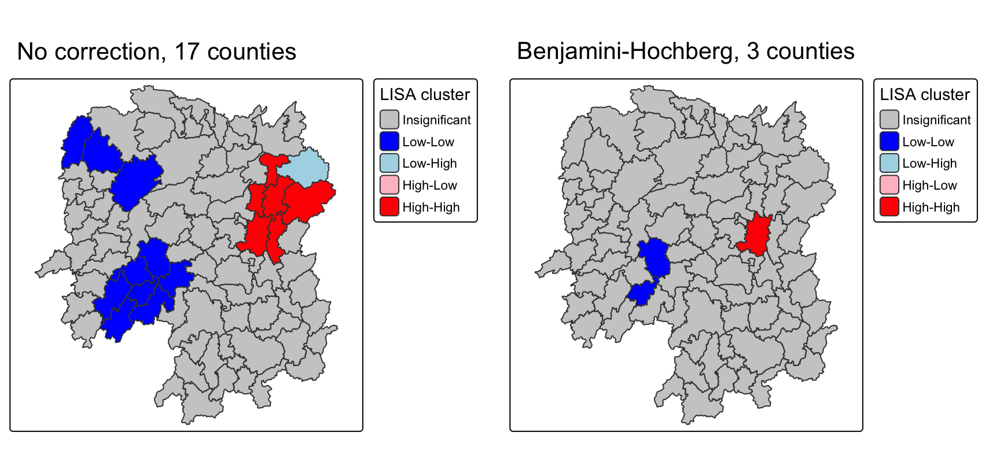
Three counties remain after correction: Longhui and Wugang, Low-Low counties in the west, and Xiangtan, in the High-High cluster around Changsha. Wugang is the only county that also meets the Bonferroni bound. The corrected map is therefore weighted towards the Low-Low cluster in the west, which reverses the emphasis of the uncorrected map. The 16 counties of section 4.1.5 are candidate clusters. The Gi* map of section 4.2.3 was not tested against a corrected threshold.
The corrected result also differs from global G in section 5.4, which indicates that high values dominate the province-wide pattern. The two results are consistent because the statistics measure different things. Global G weights counties by the magnitude of their values. A corrected LISA identifies the individual counties whose statistics meet a threshold corrected for 88 simultaneous tests, and two of the three such counties have low GDPPC.
Anselin (1995) raises a further point that no correction addresses. Local statistics are themselves spatially autocorrelated, since neighbouring counties share the observations from which their statistics are computed:
This spatial clustering (or spatial autocorrelation) of both the Gi* and the LISA statistics is a result of the way they are constructed, and should be kept in mind when visually interpreting a map of LISAs.
When significant counties are adjacent, the map cannot show whether they reflect a pattern shared across the area or one very high value that falls in all of their neighbourhoods.
5.4 Getis-Ord global G
Sections 3.3 and 3.4 found positive spatial autocorrelation in GDPPC under both global measures (Moran’s I = 0.301, Geary’s C = 0.691). Neither statistic distinguishes clustering of high values from clustering of low values.
The Getis-Ord global G, covered in slides 16 and 17 but in neither chapter, measures the overall concentration of high or low values. Getis and Ord (1992) state the limitation of Moran’s I that G addresses:
The I(d) statistic has its peculiar weakness in not being able to discriminate between patterns that have high values dominant within d or low values dominant.
Getis and Ord (1992) conclude that “any test for spatial association should use both types of statistics.”
Does the positive spatial autocorrelation in GDPPC reflect clustering of high values or of low values?
nb_band <- dnearneigh(st_centroid(st_geometry(hunan)), 0, ct)
lw_band <- nb2listw(nb_band, style = "B", zero.policy = TRUE)
globalG.test(hunan$GDPPC, lw_band, zero.policy = TRUE)
Getis-Ord global G statistic
data: hunan$GDPPC
weights: lw_band
standard deviate = 3.0285, p-value = 0.001229
alternative hypothesis: greater
sample estimates:
Global G statistic Expectation Variance
5.099677e-02 4.362591e-02 5.923594e-06
NoteHow the code works
The block uses three new functions:
st_centroid(x) # sf
dnearneigh(x, d1, d2) # spdep
globalG.test(x, listw, zero.policy = attr(listw, "zero.policy"),
alternative = "greater") # spdepst_centroid()replaces each county by its centroid, anddnearneigh()makes every pair of centroids betweend1 = 0andd2 = ctmetres apart into neighbours.nb2listw(style = "B")gives each neighbour a weight of 1 without row standardisation, as the definition of G requires.globalG.test()computes G and tests it against its expectation under spatial randomness.alternative = "greater", the default, tests whether high values are concentrated.
Getis and Ord (1992) define G on a binary distance-based weights matrix, so style = "B" follows from the definition of the statistic. G is the ratio of the weighted sum of the products of value pairs to the total sum of the products of value pairs. Only the numerator contains the weights, so row standardisation would change the meaning of the ratio.
For GDPPC, G is 0.0510, against an expectation of 0.0436 (z = 3.03, p = 0.0012). A significant positive z-score indicates that high values within d of other high values dominate the pattern.
This appears to conflict with the LISA map of section 4.1.5, which has nine Low-Low counties and six High-High counties. The two statistics measure different things:
mu <- mean(hunan$GDPPC)
lisa |>
st_drop_geometry() |>
filter(LISA_cluster %in% c("High-High", "Low-Low")) |>
group_by(LISA_cluster) |>
summarise(counties = n(),
mean_deviation_from_provincial_mean = round(mean(GDPPC - mu))) |>
kable()| LISA_cluster | counties | mean_deviation_from_provincial_mean |
|---|---|---|
| Low-Low | 9 | -11576 |
| High-High | 6 | 28860 |
NoteHow the code works
The block uses three new functions:
group_by(.data, ...) # dplyr
summarise(.data, ...) # dplyr
n() # dplyrfilter()(section 5.3) keeps the High-High and Low-Low counties.group_by()splits the rows by cluster, andsummarise()then computes one row per group.n()counts the counties in each group, andmean(GDPPC - mu)averages their deviation from the provincial mean,mu.
Global G weights each county by the magnitude of its value. On average the six High-High counties are about 28,900 yuan above the provincial mean, and the nine Low-Low counties about 11,600 yuan below it. GDPPC is bounded below by zero and unbounded above, so high values deviate further from the mean than low values, and they dominate a sum-of-products statistic although they are fewer.
The three statistics therefore describe different aspects of the same pattern. Moran’s I indicates positive spatial autocorrelation, global G indicates that high values dominate it, and the LISA map shows where the clusters are: high values around Changsha and low values in the west.
5.4.1 Natural origin and location invariance
Section 4.1.4 standardised GDPPC before plotting it against its spatial lag, because the scatterplot compares each county with the provincial mean. Chapter 10 standardises there but computes Gi* on the raw values, and does not say why the two differ. The reason is a condition that Getis and Ord (1992) place on G, and that neither chapter states.
A variable has a natural origin when zero represents the absence of the quantity measured, as opposed to an arbitrary reference point. G is computed from the values themselves, not from their deviations from the mean, so the position of zero on the measurement scale affects the statistic. GDPPC has a natural origin, since zero yuan per person corresponds to zero output. Regression residuals do not, since their zero is defined by the fitted line.
Getis and Ord (1992) state two conditions, the first for Gi and the second for G(d):
Gi is scale-invariant (Yi = bXi yields the same scores as Xi) but not location-invariant (Yi = a + Xi gives different results than Xi). The statistic is intended for use only for those variables that possess a natural origin.
it is inappropriate to use G(d) to study residuals from regression.
How far do G and Moran’s I change when a constant is added to GDPPC?
shift_test <- function(a) {
x <- hunan$GDPPC + a
g <- globalG.test(x, lw_band, zero.policy = TRUE)
m <- moran.test(x, rswm_q, zero.policy = TRUE)
tibble(shift = a, G = g$estimate[1], z_G = g$statistic, p_G = g$p.value,
I = m$estimate[1], z_I = m$statistic, p_I = m$p.value)
}
bind_rows(shift_test(0), shift_test(10000), shift_test(100000)) |>
mutate(across(c(p_G, p_I), ~ format(.x, digits = 3, scientific = TRUE))) |>
kable(digits = 4)| shift | G | z_G | p_G | I | z_I | p_I |
|---|---|---|---|---|---|---|
| 0e+00 | 0.0510 | 3.0284840 | 1.23e-03 | 0.3007 | 4.7351 | 1.09e-06 |
| 1e+04 | 0.0475 | 2.3578073 | 9.19e-03 | 0.3007 | 4.7351 | 1.09e-06 |
| 1e+05 | 0.0440 | 0.8953641 | 1.85e-01 | 0.3007 | 4.7351 | 1.09e-06 |
NoteHow the code works
The block defines one function and uses two new ones:
shift_test <- function(a) ... # defined here
bind_rows(...) # dplyr
across(.cols, .fns) # dplyrshift_test()adds a constantato GDPPC, runs global G and Moran’s I on the shifted values, and returns one row of results. Defining it once means the three shifts are computed in exactly the same way.bind_rows()stacks the three one-row results into one table.across(c(p_G, p_I), ~ format(...))applies the same formatting to both p-value columns, which prints the very small values in scientific notation.
Moran’s I is unchanged: it is computed on deviations from the mean, and adding a constant leaves every deviation unchanged. Global G is no longer significant. Its z-score decreases from 3.03 to 0.90 and its p-value increases from 0.0012 to 0.19. Multiplying GDPPC by a constant, in place of adding one, leaves both statistics unchanged. This is the scale invariance that Getis and Ord describe.
g2 <- globalG.test(hunan$GDPPC * 2, lw_band, zero.policy = TRUE)
m2 <- moran.test(hunan$GDPPC * 2, rswm_q, zero.policy = TRUE)
c(G_doubled = g2$estimate[1], z_G_doubled = g2$statistic,
I_doubled = m2$estimate[1], z_I_doubled = m2$statistic) G_doubled.Global G statistic
0.05099677
z_G_doubled.standard deviate
3.02848403
I_doubled.Moran I statistic
0.30074997
z_I_doubled.Moran I statistic standard deviate
4.73513201 The natural-origin requirement makes a G result a statement about the variable on the scale on which it was measured. For a variable centred at zero, or for regression residuals, a significant G would be an artefact of the position of zero on the scale.
5.5 Null models for Moran’s I
Section 3.3.1 ran moran.test() on GDPPC and reported a z-score of 4.74. Moran (1950), who introduced the statistic, states that its variance, and so this z-score, requires normally distributed values, and GDPPC is right skewed. By default, however, moran.test() does not use Moran’s variance. Its randomisation argument, which defaults to TRUE and is not mentioned in either chapter, selects a different null model. What does each null model assume?
Moran (1950) derives the expectation of I without any distributional assumption, and states that the second moment (which gives the variance, how widely I spreads around its expectation) requires an assumption about the distribution:
To evaluate the second moment of I we have to assume further that all the xij are distributed normally.
randomisation = FALSE is Moran’s own variance, which assumes the values are drawn from a normal distribution. Geary (1954) sets out both null models:
The theory is discussed from the viewpoints of both randomization and classical normal theory. With the randomization approach, the observations themselves are the “universe” and no assumption need be made as to the character of the frequency distribution.
Having found the distribution of c close to normal for Ireland’s 26 counties, he concludes that “accordingly, one can have confidence in deciding on significance from the standard error.”
- Normality assumes the 88 values are drawn from a normal distribution, which does not hold for a right-skewed variable such as GDPPC.
- Randomisation, the default used in section 3.3.1, treats the 88 values as fixed and considers every assignment of them to counties. Its z-score still relies on a normal approximation.
- Permutation, used in section 3.3.2, samples 999 of those assignments and needs no approximation.
Sections 3.3.1 and 3.3.2 reach the same conclusion under the randomisation and permutation null models: both reject the null hypothesis of no spatial autocorrelation. I is a sum over all 88 counties, so a normal approximation suits it better than a local statistic computed from five neighbours, which is the case examined in section 5.2.
5.6 Local Geary’s c
Section 3.4 computed Geary’s C for the whole province. Section 3.5 compared its correlogram with that of Moran’s I, and the two differed in significance at lags 3 and 6.
Neither chapter computes the local form of Geary’s C. Slide 26 identifies it as a second LISA, alongside local Moran’s I. Each of the two local statistics misses a pattern that the other detects, and this section compares them on GDPPC.
Local Moran’s I and local Geary’s c differ in construction. Up to scaling constants, for county \(i\) with neighbours \(j\) and weights \(w_{ij}\),
\[ I_i = (x_i - \bar{x}) \sum_j w_{ij}(x_j - \bar{x}), \qquad c_i = \sum_j w_{ij}(x_i - x_j)^2 . \]
- Local Moran’s I compares the county with the provincial mean. It multiplies the county’s deviation from the mean by the weighted deviations of its neighbours, so for a county near the mean \(I_i\) is small, even when the county matches its neighbours closely.
- Local Geary’s c compares the county with its neighbours. As slide 26 defines it, \(c_i\) adds up the squared differences between the county and each neighbour, and the provincial mean cancels in each difference. \(c_i\) is large for a county whose value differs sharply from its neighbours’ values. It cannot distinguish High-High from Low-Low, since a cluster of high values and a cluster of low values both give small differences.
Section 4.1.5 found 16 significant counties with local Moran’s I. How many does local Geary’s c find, and which counties do the two statistics classify differently?
set.seed(1234)
lgeary <- wm_q |>
mutate(local_c = local_c_perm(GDPPC, nb, wt, nsim = 999), .before = 1) |>
unnest(local_c)
tibble(statistic = c("local Moran's I", "local Geary's c"),
significant_at_0.05 = c(sum(lisa$p_ii_sim < 0.05),
sum(lgeary$p_ci_sim < 0.05))) |>
kable()| statistic | significant_at_0.05 |
|---|---|
| local Moran’s I | 16 |
| local Geary’s c | 21 |
NoteHow the code works
The block uses one new function:
local_c_perm(x, nb, wt, nsim = 499, alternative = "two.sided") # sfdeplocal_c_perm()computes local Geary’s c for each county and tests it by conditional permutation. It follows the pattern oflocal_moran()in section 4.1.2: it returns a data frame of results, stored as the columnlocal_cand spread into columns byunnest().p_ci_simis the rank-based p-value from the 999 permutations.nsimdefaults to 499.
Local Geary’s c identifies 21 significant counties, against 16 for local Moran’s I. Eleven counties are significant under one statistic and not the other.
sig_moran <- lisa$p_ii_sim < signif
sig_geary <- lgeary$p_ci_sim < signif
z <- (hunan$GDPPC - mean(hunan$GDPPC)) / sd(hunan$GDPPC)
tibble(County = hunan$County, GDPPC = hunan$GDPPC, z_GDPPC = round(z, 2),
`local Moran` = sig_moran, `local Geary` = sig_geary) |>
filter(sig_moran != sig_geary) |>
arrange(z_GDPPC) |>
kable()| County | GDPPC | z_GDPPC | local Moran | local Geary |
|---|---|---|---|---|
| Jianghua | 15801 | -0.57 | FALSE | TRUE |
| Jiangyong | 17168 | -0.48 | FALSE | TRUE |
| Hanshou | 20981 | -0.23 | FALSE | TRUE |
| Hengnan | 21911 | -0.17 | FALSE | TRUE |
| Taoyuan | 22879 | -0.10 | FALSE | TRUE |
| Yuanling | 24194 | -0.01 | TRUE | FALSE |
| Changning | 24418 | 0.00 | FALSE | TRUE |
| Hengshan | 25172 | 0.05 | FALSE | TRUE |
| Miluo | 42497 | 1.21 | TRUE | FALSE |
| Shaoshan | 55570 | 2.08 | FALSE | TRUE |
| Liuyang | 63118 | 2.58 | TRUE | FALSE |
NoteHow the code works
The block uses two new functions:
sd(x) # stats
arrange(.data, ...) # dplyrsd()returns the standard deviation, sozis each county’s GDPPC in standard deviations from the provincial mean.filter(sig_moran != sig_geary)keeps the counties that are significant under one statistic and not the other.arrange()sorts the rows, here from the lowestz_GDPPCto the highest.
Of the eleven:
- Eight are significant only under local Geary’s c. Six of them have GDPPC within half a standard deviation of the provincial mean, where local Moran’s I is small whatever the neighbours’ values are. The exceptions are Jianghua in the south and Shaoshan, whose GDPPC is about two standard deviations above the mean.
- Three are significant only under local Moran’s I. Liuyang and Miluo lie in or beside the Changsha hot spot, and Yuanling sits close to the provincial mean.
5.7 Gi* weights: fixed band versus k nearest neighbours
Section 4.2.1 created hunan_adw as chapter 10 does, but chapter 10 never uses it. Section 4.2.2 computed Gi* on the fixed distance band only.
Fixed and adaptive schemes hold different quantities constant:
- A fixed distance band fixes the radius. One radius applies to the whole province, so a county surrounded by large counties has few neighbours, and a county in an area of small counties has many.
- An adaptive scheme fixes the number of neighbours. Every county has the same number, and the radius varies.
The maps below show this for two counties: Yuanling, a large county in the west, and Shaodong, a smaller one in the centre.
Code
show_nb <- function(nb, title) {
yl <- which(hunan$County == "Yuanling")
sd <- which(hunan$County == "Shaodong")
hunan |>
mutate(group = case_when(row_number() %in% nb[[yl]] ~ "Yuanling and its neighbours",
row_number() %in% nb[[sd]] ~ "Shaodong and its neighbours",
TRUE ~ "Other"),
group = factor(group, levels = c("Yuanling and its neighbours",
"Shaodong and its neighbours", "Other"))) |>
tm_shape() +
tm_polygons(fill = "group",
fill.scale = tm_scale_categorical(values = c("purple", "orange", "grey90")),
fill.legend = tm_legend(title = "", position = tm_pos_out("right", "center"))) +
tm_title(title)
}
tmap_arrange(show_nb(hunan_fdw$nb, "Fixed band, 62,955 m"),
show_nb(hunan_adw$nb, "Adaptive, k = 6 plus self"),
asp = 1, ncol = 2)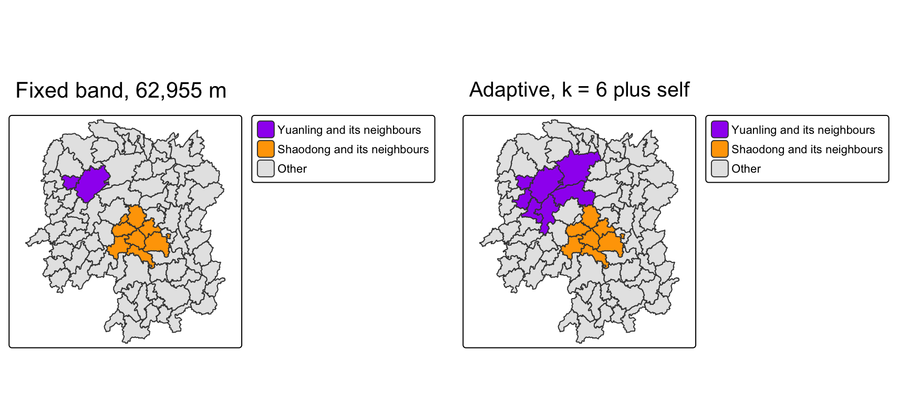
For Gi*, reported as a z-score, the number of neighbours matters. According to slide 30, a sparse neighbourhood produces a large variance of the estimate, which reduces the z-score of Gi* towards zero, so the county is less likely to reach significance. Slide 35 gives a rule of thumb of about eight neighbours per feature for a skewed variable.
How many counties do the two schemes classify differently, and are the differences mainly in one direction?
set.seed(1234)
HCSA_adw <- hunan_adw |>
mutate(gistar = local_gstar_perm(GDPPC, nb, wt, nsim = 999), .before = 1) |>
unnest(gistar) |>
mutate(HCSA_cluster = case_when(p_sim >= signif ~ "Insignificant",
gi_star > 0 ~ "Hot spot",
TRUE ~ "Cold spot"),
HCSA_cluster = factor(HCSA_cluster,
levels = c("Insignificant", "Hot spot", "Cold spot")))
table(fixed_band = HCSA_fdw$HCSA_cluster,
adaptive_k = HCSA_adw$HCSA_cluster) adaptive_k
fixed_band Insignificant Hot spot Cold spot
Insignificant 65 5 6
Hot spot 1 6 0
Cold spot 3 0 2The two schemes classify 15 of the 88 counties differently, and most of the differences are in one direction:
- Eleven counties are significant under the adaptive weights and not under the fixed band.
- Four are significant under the fixed band and not under the adaptive weights.
The map below is the adaptive counterpart of the map in section 4.2.3.
tm_shape(HCSA_adw) +
tm_polygons(fill = "HCSA_cluster",
fill.scale = tm_scale_categorical(
values = c("grey80", "red", "blue")),
fill.legend = tm_legend(title = "Gi* cluster",
position = tm_pos_out("right", "center"))) +
tm_borders() +
tm_title("Hot and cold spots of GDPPC, adaptive k = 6 plus self, p < 0.05")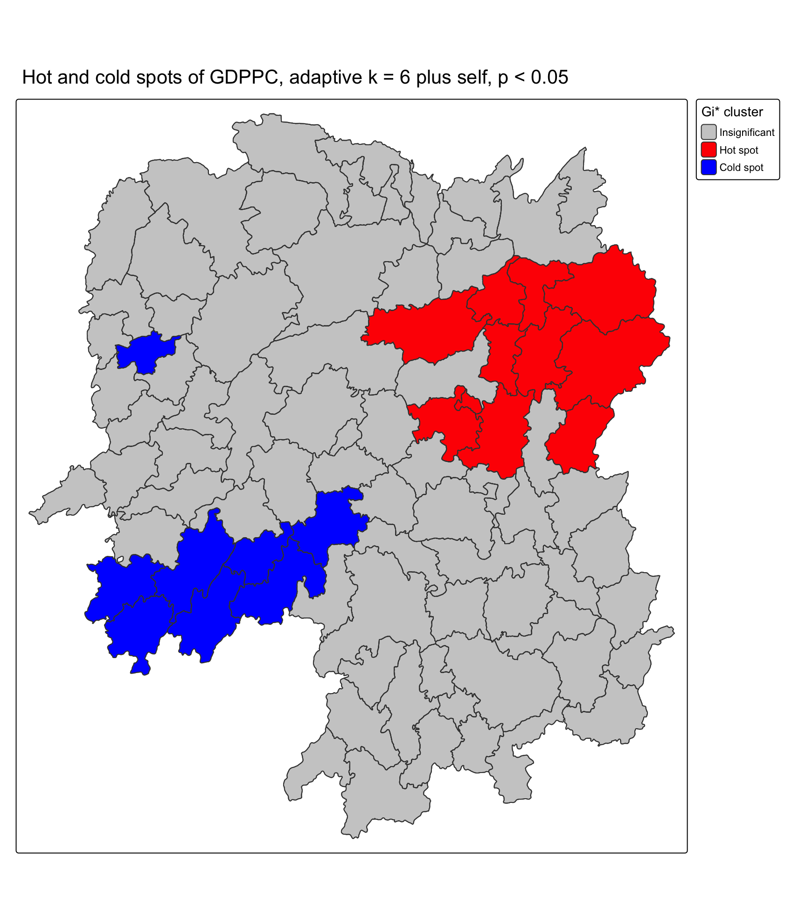
tibble(scheme = c("fixed band", "adaptive k"),
min_neighbours = c(min(lengths(hunan_fdw$nb)), min(lengths(hunan_adw$nb))),
median_neighbours = c(median(lengths(hunan_fdw$nb)), median(lengths(hunan_adw$nb))),
max_neighbours = c(max(lengths(hunan_fdw$nb)), max(lengths(hunan_adw$nb)))) |>
kable()| scheme | min_neighbours | median_neighbours | max_neighbours |
|---|---|---|---|
| fixed band | 2 | 5 | 8 |
| adaptive k | 7 | 7 | 7 |
The neighbour counts explain the direction of the differences:
- Fixed band: as few as two neighbours. Some counties have as few as two neighbours, including themselves, which is the sparse case described on slide 30. The median county has five.
- Adaptive: seven for every county. No county has a small neighbourhood because of its location among large counties. Seven is also close to the eight suggested on slide 35.
The adaptive scheme looks preferable, but a larger count of significant counties does not show that a scheme is more accurate. A larger neighbourhood alone produces more significant counties, with no change in the data: more neighbours lower the variance of Gi* (slide 30), which moves its z-score away from zero. The eight neighbours of slide 35 is a guideline. Section 5.7.1 therefore varies k and checks which classifications change.
5.7.1 Sensitivity to the number of neighbours
Section 4.2.1 set k = 6 as chapter 10 does, and the comparison above uses that value alone.
Mack and Kam (2018) take a different approach to the same decision in their study of conflict in Africa. Before choosing a weights matrix, they tabulate two quantities under several definitions:
- the number of regions left without neighbours;
- the average number of links.
They reject the widest definition because an average of 52 links “may skew the analysis”.
The same check can be applied to k. A county whose Gi* classification is the same under several neighbourhood sizes depends less on any one of them.
How many counties are significant at k = 4, 6 and 8, and which keep the same classification under all three?
nb_k4 <- include_self(st_knn(st_geometry(hunan), k = 4))
set.seed(1234)
gi_k4 <- local_gstar_perm(hunan$GDPPC, nb_k4, st_weights(nb_k4), nsim = 999)
nb_k8 <- include_self(st_knn(st_geometry(hunan), k = 8))
set.seed(1234)
gi_k8 <- local_gstar_perm(hunan$GDPPC, nb_k8, st_weights(nb_k8), nsim = 999)
k_compare <- tibble(
County = hunan$County,
k4 = case_when(gi_k4$p_sim >= signif ~ "Insignificant",
gi_k4$gi_star > 0 ~ "Hot spot", TRUE ~ "Cold spot"),
k6 = as.character(HCSA_adw$HCSA_cluster),
k8 = case_when(gi_k8$p_sim >= signif ~ "Insignificant",
gi_k8$gi_star > 0 ~ "Hot spot", TRUE ~ "Cold spot"))
tibble(k = c(4, 6, 8),
significant_counties = c(sum(k_compare$k4 != "Insignificant"),
sum(k_compare$k6 != "Insignificant"),
sum(k_compare$k8 != "Insignificant"))) |>
kable()| k | significant_counties |
|---|---|
| 4 | 17 |
| 6 | 19 |
| 8 | 25 |
k_compare |>
filter(k4 == k6, k6 == k8, k4 != "Insignificant") |>
select(County, class = k6) |>
arrange(class, County) |>
kable()| County | class |
|---|---|
| Jingzhou | Cold spot |
| Suining | Cold spot |
| Wugang | Cold spot |
| Xinning | Cold spot |
| Changsha | Hot spot |
| Liuyang | Hot spot |
| Pingjiang | Hot spot |
| Shaoshan | Hot spot |
| Taojiang | Hot spot |
| Wangcheng | Hot spot |
| Xiangxiang | Hot spot |
| Xiangyin | Hot spot |
The number of significant counties rises with k, from 17 at k = 4 to 25 at k = 8, as expected from slide 30: a larger neighbourhood reduces the variance of Gi* and moves its z-score away from zero. Twelve counties keep the same classification under all three values:
- eight hot spots around Changsha;
- four cold spots in the south west: Jingzhou, Suining, Wugang and Xinning. Wugang is also the county that meets the Bonferroni bound in section 5.3.3.
The classification of the other significant counties depends on k.
5.8 Gi and local Moran’s I under permutation
Section 4.1 produced a LISA map from the local Moran and section 4.2 a hot and cold spot map from Gi*. Chapter 10 presents the two as separate analyses.
Anselin (1995) argues that the two share one permutation test:
Under conditional permutation, only the numerator of each statistic varies.
The varying term is the same in both statistics.
Therefore:
the randomization method applied to [the local Moran] will yield the same empirical reference distribution as when applied to the Getis and Ord Gi and Gi* statistics. Hence, inference based on this nonparametric approach will be identical for the two statistics.
On the Queen contiguity weights of section 4.1.1, do Gi and Gi* give the same permutation p-values as the local Moran? A second run of Gi* with a different random seed shows how much two runs differ by chance alone.
set.seed(7); li <- local_moran(hunan$GDPPC, wm_q$nb, wm_q$wt, nsim = 9999)
set.seed(7); gi <- local_g_perm(hunan$GDPPC, wm_q$nb, wm_q$wt, nsim = 9999)
set.seed(7); gs <- local_gstar_perm(hunan$GDPPC, wm_q$nb, wm_q$wt, nsim = 9999)
set.seed(8); gs2 <- local_gstar_perm(hunan$GDPPC, wm_q$nb, wm_q$wt, nsim = 9999)
tibble(comparison = c("Gi against local Moran",
"Gi* against local Moran",
"Gi* against Gi*, different random seed"),
largest_difference = c(max(abs(gi$p_sim - li$p_ii_sim)),
max(abs(gs$p_sim - li$p_ii_sim)),
max(abs(gs$p_sim - gs2$p_sim))),
counties_significant_in_one_only = c(
sum((gi$p_sim < signif) != (li$p_ii_sim < signif)),
sum((gs$p_sim < signif) != (li$p_ii_sim < signif)),
sum((gs$p_sim < signif) != (gs2$p_sim < signif)))) |>
kable(digits = 4)| comparison | largest_difference | counties_significant_in_one_only |
|---|---|---|
| Gi against local Moran | 0.0002 | 0 |
| Gi* against local Moran | 0.0328 | 1 |
| Gi* against Gi*, different random seed | 0.0290 | 0 |
NoteHow the code works
The block uses one new function:
local_g_perm(x, nb, wt, nsim = 499, alternative = "two.sided") # sfdeplocal_g_perm()computes Gi, which excludes the county itself, wherelocal_gstar_perm()(section 4.2.2) computes Gi*, which includes it. All three statistics use the Queen contiguity weights of section 4.1.1 and 9,999 permutations.set.seed()(section 3.3.2) before each call starts every statistic from the same random numbers, except the second Gi* run, which uses a different seed to measure simulation error.abs()takes absolute differences, andmax()keeps the largest across the 88 counties.
- Gi agrees with the local Moran to within 0.0002, one step of the p-value grid at 9,999 permutations.
- Gi* differs from the local Moran by up to 0.033, but two runs of Gi* differ from each other by a similar amount, 0.029.
The difference between Gi* and the local Moran is therefore simulation error, and Anselin’s (1995) claim holds for both Gi and Gi* on these data.
Gi* and the local Moran also reach the same decision at p < 0.05 for every county except Yongshun, whose p-value is 0.051 under the local Moran and 0.047 under Gi*. A difference of that size lies within the simulation error shown in the table.
Where Gi* and the local Moran give the same p-value, they differ in what a significant result says about the county:
- The local Moran identifies similarity and outliers. A significant positive local Moran indicates that the county and its neighbours have similar values, without indicating whether those values are high or low. The local Moran also identifies the High-Low and Low-High outliers, which Gi* does not.
- Gi* indicates whether the values are high or low. A positive value marks a cluster of high values and a negative value a cluster of low values (Anselin 1995).
This is the sense of the recommendation by Getis and Ord (1992) in section 5.4 that “any test for spatial association should use both types of statistics”.
On the same weights, the permutation tests behind chapter 10’s LISA map and hot and cold spot map would give the same p-values. The two maps differ for two reasons: they use different weights, Queen contiguity against a fixed distance band, and they classify the significant counties differently.
6 Reflection
Chapter 10 frames the analysis as three questions (section 10.2.1). The answers on this page are:
- Is development evenly distributed across the province? No. GDPPC ranges from 8,497 yuan in Guidong to 88,656 yuan in Changsha.
- Is there sign of spatial clustering? Yes. Moran’s I is 0.301 and Geary’s C is 0.691, both significant under the analytical and the permutation tests (sections 3.3 and 3.4).
- Where are the clusters? A cluster of high GDPPC around Changsha in the north east and a cluster of low GDPPC in the west (sections 4.1.5 and 4.2.3). After correction for 88 tests, three counties remain significant, two of them in the western cluster (section 5.3.3).
Chapters 9 and 10 address the question left open by Exercise 4. In the lag scatterplot, the positive slope reflects significant positive spatial autocorrelation in GDPPC (Moran’s I = 0.301, permutation p = 0.001), and Geary’s C, on its inverted scale, gives a consistent result. Global G indicates that the association is dominated by high values.
The local statistics locate the clusters. Sixteen counties are significant: the High-High group comprises Changsha and its surroundings, and the Low-Low group is in the west. Gi* on the same data identifies a hot spot in the same area. Under every weighting scheme tested here, the division between high and low GDPPC lies between the north east and the west.
These methods are less independent of one another than their number suggests. Global Moran’s I, global G and the LISA map are all computed from the same 88 values, and in section 5.8 I found that Gi, Gi* and the local Moran are the same permutation test when the weights are the same. The comparisons of weighting schemes in sections 5.7 and 5.7.1 are the only places where the location of the division between high and low GDPPC was tested against an alternative.
The more specific results depended on choices of method. With the data held the same:
- changing only the p-value column changed the count of significant counties from 13 to 16;
- changing from local Moran to local Geary changed it from 16 to 21;
- 15 counties were classified differently under a fixed and an adaptive Gi* neighbourhood.
The multiple-comparisons result in section 5.3, that no county remains significant after correction at 999 permutations, changed how I would report a LISA map, and reading the papers changed my view of it twice.
In my first draft of that section I attributed to Anselin the argument that a correction does not apply directly to a LISA map, because the tests are not independent. His paper does not make that argument. He writes that “it is obvious that some correction to the individual significance levels is needed” and disputes only whether m should equal n, then applies m = n in his own worked example. Ord and Getis recommend the Bonferroni bound and record a referee’s objection that it may be unduly conservative when n is large. Both assigned papers treat the correction as necessary.
My second change of view came from the number of permutations in Anselin’s worked example, 9,999. He gives no reason for the number, so the inference that follows is mine. A corrected bound cannot be met by a p-value whose minimum exceeds it, and the minimum depends on nsim. I had treated the number of simulations as a setting for precision, and I now choose it after deciding on the correction.
Two of the readings contain claims that I could test directly. Getis and Ord state that G is not location-invariant. Adding 100,000 to GDPPC changed the p-value of G from 0.0012 to 0.19 and left Moran’s I unchanged. A G result is thus a statement about the variable on the scale on which it was measured. Anselin states that permutation inference is identical for the local Moran, Gi and Gi*. My first test appeared to show the claim failing for Gi*. The gap turned out to be the same size as the gap between two runs of Gi* with different random seeds, so it was simulation error, and the claim holds for both.
Ord and Getis’s simulation results determined my choice of p_ii_sim over p_ii in section 5.2. Both of their patterns (ii) and (iii), a skewed variable and few neighbours, apply to these data. For the counties of most interest on the map, the normal-approximation p-value is least reliable. Section 5.7 is also affected by these patterns: the adaptive scheme gives every county seven neighbours and removes the few-neighbour case of pattern (iii).
My main practical difficulty in this exercise was the same as in Exercise 4. Three calls in chapter 10 ran without error and without the effect that the surrounding text described:
nsim = 99ran 8,712 permutations whose rank-based p-value was then not used;hunan_adwwas created and not used;signifwas assigned and not used.
I found them by comparing what each call returned with what the surrounding text said it did.
I first left the choice of k as a rule of thumb and then tested it, following the tabulation in Mack and Kam (2018). The count of significant counties depends on k, from 17 at k = 4 to 25 at k = 8, while twelve counties keep the same classification under every value tested. I would report those twelve as the hot and cold spots of this map and treat the remainder as dependent on the neighbourhood size.
A second open question concerns change over time. All results on this page are for a single year, 2012, and the division within the province is treated as fixed. Emerging hot spot analysis, on slides 37 to 43, would test whether the hot spot around Changsha is intensifying and whether GDPPC in the west is converging towards that of the north east. It needs a value for every county in every period, and the Lesson 5 material provides one year.
7 References
Course materials:
- Kam, T.S. (2026). Lesson 5: Global and Local Measures of Spatial Association. ISSS626 Geospatial Analytics and Applications, SMU. Slide deck dated 20 September 2026.
- Kam, T.S. (2026). R for Geospatial Data Science and Analytics, Chapter 9: Global Measures of Spatial Autocorrelation.
- Kam, T.S. (2026). R for Geospatial Data Science and Analytics, Chapter 10: Local Measures of Spatial Autocorrelation.
Assigned self-reading:
- Moran, P.A.P. (1950). “Notes on Continuous Stochastic Phenomena”. Biometrika, 37(1/2), 17-23.
- Geary, R.C. (1954). “The Contiguity Ratio and Statistical Mapping”. The Incorporated Statistician, 5(3), 115-127 and 129-146.
- Getis, A. and Ord, J.K. (1992). “The Analysis of Spatial Association by Use of Distance Statistics”. Geographical Analysis, 24(3), 189-206.
- Anselin, L. (1995). “Local Indicators of Spatial Association - LISA”. Geographical Analysis, 27(2), 93-115.
- Ord, J.K. and Getis, A. (1995). “Local Spatial Autocorrelation Statistics: Distributional Issues and an Application”. Geographical Analysis, 27(4), 286-306.
References listed in the Lesson 5 outline:
Anselin, L. (1996). “The Moran Scatterplot as an ESDA Tool to Assess Local Instability in Spatial Association”. In Fischer, M., Scholten, H.J. and Unwin, D. (eds), Spatial Analytical Perspectives on GIS. Taylor and Francis, 111-125.
Getis, A. (2010). “B.3 Spatial Autocorrelation”. In Fischer, M.M. and Getis, A. (eds), Handbook of Applied Spatial Analysis: Software Tools, Methods and Applications. Springer, 255-278.
Mack, Z.W.V. and Kam, T.S. (2018). “Is There Space for Violence?: A Data-driven Approach to the Exploration of Spatial-Temporal Dimensions of Conflict”. Proceedings of the 2nd ACM SIGSPATIAL Workshop on Geospatial Humanities, Seattle.
Software:
- Bivand, R. (2022). “R Packages for Analyzing Spatial Data: A Comparative Case Study with Areal Data”. Geographical Analysis, 54(3), 488-518. The
spdepreference. - Parry, J. (2023). sfdep: Spatial Neighbors and Statistics. R package version 0.2.5.
8 About this document
Written and executed in Quarto with R 4.6.1, spdep 1.4.2, sfdep 0.2.5 and tmap 4.4.1. All figures and tables are generated at render time from the data in data/, so nothing on this page is pasted in.
I used AI assistance while working out the approach and the extensions in Part 3. The analysis was run and checked by me.